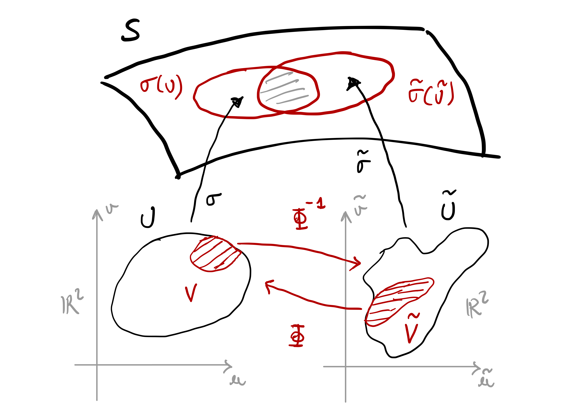

4 Surfaces
Curves are 1D objects in \(\mathbb{R}^3\), parametrized via functions \({\pmb{\gamma}}\colon (a,b) \to \mathbb{R}^3\). There is only one available direction in which to move on a curve:
- \(t \mapsto {\pmb{\gamma}}(t)\) moves forward on the curve
- \(t \mapsto {\pmb{\gamma}}(-t)\) moves backward on the curve
Surfaces are 2D objects in \(\mathbb{R}^3\). There are two directions in which one can move on a surface.

Question 1
How to dercribe a surface mathematically?
A curve \(\Gamma \subseteq \mathbb{R}^3\) can be described with one function \({\pmb{\gamma}}\colon (a,b) \to \Gamma\). The idea is that \(\Gamma\) looks locally like \(\mathbb{R}\).

A surface \(\mathcal{S}\) cannot be described, in general, with just one function \({\pmb{\sigma}}\colon U \to \mathcal{S}\), with \(U \subseteq \mathbb{R}^2\) open set. The idea is that, to describe \(\mathcal{S}\), one needs to piece together many local charts \({\pmb{\sigma}}_i \colon U_i \to \mathcal{S}\) with \(U_i \subseteq \mathbb{R}^2\) open. Such charts have to cover the whole surface \(\mathcal{S}\), e.g. \[ \mathcal{S}= \bigcup_{i} {\pmb{\sigma}}_i (U_i) \,. \]

4.1 Preliminaries
Before proceeding with the formal definition of surface, we need to establish some basic notation and terminology regarding linear algebra, the topology of \(\mathbb{R}^n\), and calculus for smooth maps from \(\mathbb{R}^n\) into \(\mathbb{R}^m\).
4.1.1 Linear algebra
Before proceeding with the first fundamental form, we revise some linear algebra.
Definition 2: Bilinear form
Let \(V\) be a vector space and \(B \colon V \times V \to \mathbb{R}\). We say that:
\(B\) is bilinear if \[\begin{align*} B(\lambda_1 \mathbf{v}_1 + \lambda_2 \mathbf{v}_2 , \mathbf{w}) & = \lambda_1 B(\mathbf{v}_1,\mathbf{w}) + \lambda_2 B(\mathbf{v}_2,\mathbf{w}) \,, \\ B(\mathbf{w}, \lambda_1 \mathbf{v}_1 + \lambda_2 \mathbf{v}_2 ) & = \lambda_1 B(\mathbf{w},\mathbf{v}_1) + \lambda_2 B(\mathbf{w}, \mathbf{v}_2) \,. \end{align*}\] for all \(\mathbf{v}_i,\mathbf{w}\in V\), \(\lambda_i \in \mathbb{R}\).
\(B\) is symmetric if \[ B(\mathbf{v},\mathbf{w}) = B(\mathbf{w}, \mathbf{v}) \] for all \(\mathbf{v},\mathbf{w}\in V\).
A bilinear map \(B\) is called bilinear form on \(V\).
Bilinear forms can be represented by a matrix.
Remark 3: Matrix representation for bilinear forms
Let \(\{\mathbf{v}_1, \ldots , \mathbf{v}_n \}\) be a basis for the vector space \(V\). Given a bilinear form \(B \colon V \times V \to \mathbb{R}\) we define the matrix \[ M := \left( B(\mathbf{v}_i,\mathbf{v}_j) \right)_{i,j=1}^n \in \mathbb{R}^{n \times n} \,. \] Then \[ B(\mathbf{v},\mathbf{w}) = \mathbf{v}^T \,M \, \mathbf{w}\,. \]
Proof. We can write \(\mathbf{v}\) and \(\mathbf{w}\) in cordinates as \[ \mathbf{v}= \sum_{i=1}^n \lambda_i \mathbf{v}_i \,, \quad \mathbf{w}= \sum_{i=1}^n \mu_i \mathbf{v}_i \,, \] for suitable coefficients \(\lambda_i, \mu_i \in \mathbb{R}\). Using bilinearity of \(B\) we get \[\begin{align*} B(\mathbf{v},\mathbf{w}) & = B \left( \sum_{i=1}^n \lambda_i \mathbf{v}_i, \sum_{j=1}^n \mu_j \mathbf{v}_j \right) \\ & = \sum_{i,j=1}^n \lambda_i \mu_j B(\mathbf{v}_i,\mathbf{v}_j) \\ & = \mathbf{v}^T M \mathbf{w}\,. \end{align*}\]
Definition 4: Quadratic form
Let \(V\) be a vector space and \(B \colon V \times V \to \mathbb{R}\) be a bilinear form. The quadratic form associated to \(B\) is the map \[
Q \colon V \to \mathbb{R}\,, \quad Q(\mathbf{v}) := B(\mathbf{v}, \mathbf{v}) \,.
\]
A symmetric bilinear form is uniquely determinded by its quadratic form, as stated in the following proposition.
Proposition 5
Let \(B \colon V \times V \to \mathbb{R}\) be a symmetric bilinear form and \(Q \colon V \to \mathbb{R}\) the associated quadratic form. Then \[
B(u,v) = \frac12 \left( Q(\mathbf{v}+ \mathbf{w}) - Q(\mathbf{v}) - Q(\mathbf{w}) \right) \,.
\] for all \(\mathbf{v},\mathbf{w}\in V\).
The proof is an easy check, and is left as an exercise.
Definition 6: Inner product
Let \(V\) be a vector space. An inner product on \(V\) is a symmetric bilinear form \(\left\langle \cdot,\cdot \right\rangle \colon V \times V \to \mathbb{R}\) such that \[ \left\langle \mathbf{v},\mathbf{v} \right\rangle > 0 \,, \quad \forall \, \mathbf{v}\in V \,. \] Moreover:
The length of a vector \(\mathbf{v}\in V\) with respect to \(B\) is defined as \[ \| \mathbf{v}\| := \sqrt{\left\langle \mathbf{v},\mathbf{v} \right\rangle} \,. \]
Two vectors \(\mathbf{v},\mathbf{w}\in V\) are orthogonal if \[ \left\langle \mathbf{v},\mathbf{w} \right\rangle = 0 \,. \]
Example 7
Let \(V = \mathbb{R}^n\) and consider the euclidean scalar product \[
\mathbf{v}\cdot \mathbf{w}= \sum_{i=1}^n v_i w_i \,,
\] where \(\mathbf{v}= (v_1,\ldots,v_n)\), \(\mathbf{w}= (w_1,\ldots,w_n)\). Then \[
\left\langle \mathbf{v},\mathbf{w} \right\rangle := \mathbf{v}\cdot \mathbf{w}
\] is an inner product on \(\mathbb{R}^n\).
Proposition 8
Let \(V\) be a vector space and \(\left\langle \cdot,\cdot \right\rangle\) an inner product on \(V\). There exists an orthonormal basis \(\{\mathbf{v}_1, \ldots, \mathbf{v}_n\}\) of \(V\), that is, such that \[
\left\langle \mathbf{v}_i,\mathbf{v}_j \right\rangle =
\begin{cases}
1 & \mbox{ if } \, i = j \\
0 & \mbox{ if } \, i \neq j \\
\end{cases}
\] In particular, the matrix \(M\) associated to \(\left\langle \cdot,\cdot \right\rangle\) is the identity.
Definition 9: Linear map
Let \(V,W\) be vector spaces and \(L \colon V \to W\). We say that \(L\) is linear if \[
L(\lambda \mathbf{v}+ \mu \mathbf{w}) = \lambda L(\mathbf{v}) + \mu L(\mathbf{w})
\] for all \(\mathbf{v},\mathbf{w}\in V\) and \(\lambda,\mu \in \mathbb{R}\).
Proposition 10: Matrix representation of linear maps
Let \(V,W\) be vector spaces and \(L \colon V \to W\) be a linear map. Let \(\{\mathbf{v}_1, \ldots, \mathbf{v}_n\}\) be a basis of \(V\) and \(\{ {\mathbf{w}}_1 , \ldots, \mathbf{w}_m\}\) be a basis of \(W\). Then there exists a matrix \(M \in \mathbb{R}^{m \times n}\) such that \[
L \mathbf{v}= M \mathbf{v}\,, \quad \forall \, \mathbf{v}\in V \,.
\] Specifically, \(M \in \mathbb{R}^{n \times n}\) is called the matrix associated to \(L\) with respect to the basis \(\{\mathbf{v}_1,\ldots,\mathbf{v}_n\}\) of \(V\) and \(\{ww_1 \ldots,\mathbf{w}_m\}\) of \(W\), and is defined by \[
M := \left(
\begin{array}{ccc}
a_{11} & \ldots & a_{1n} \\
\vdots & \ddots & \vdots \\
a_{m1} & \ldots & a_{mn}
\end{array}
\right) \,,
\] where \(a_{ij}\) are such that \[
L(\mathbf{v}_i) = a_{1i} \mathbf{w}_1 + \ldots + a_{mi} \mathbf{w}_m = \sum_{k=1}^m a_{ki} \mathbf{w}_k \,.
\] In other words, the columns of \(M\) are given by the coordinates of the vectors \(L(\mathbf{v}_i)\) with respect to the basis \(\{\mathbf{w}_1, \ldots,\mathbf{w}_m\}\).
Definition 11: Self-adjoint map
Let \(V\) be a vector space, \(\left\langle \cdot,\cdot \right\rangle\) an inner product and \(L \colon V \to V\) a linear map. We say that \(L\) is self-adjoint if \[
\left\langle \mathbf{v},L(\mathbf{w}) \right\rangle = \left\langle L(\mathbf{v}),\mathbf{w} \right\rangle \,, \quad \forall \, \mathbf{v}, \, \mathbf{w}\in V \,.
\]
Theorem 12: Spectral Theorem
Let \(V\) be a vector space, \(\left\langle \cdot,\cdot \right\rangle\) an inner product, and \(L \colon V \to V\) a self-adjoint linear map. There exist an orthonormal basis of \(V\) \[
\{ \mathbf{v}_1, \ldots, \mathbf{v}_n \} \,,
\] where \(\mathbf{v}_i\) are eigenvectors of \(L\), that is, \[
L \mathbf{v}_i = \lambda_i \mathbf{v}_i
\] for some eigevalue \(\lambda_i \in \mathbb{R}\). In particular, the matrix of \(L\) with respect to the basis \(\{\mathbf{v}_1,\ldots,\mathbf{v}_n\}\) is diagonal: \[
M = \operatorname{diag} (\lambda_1,\ldots, \lambda_n) =
\left(
\begin{array}{cccc}
\lambda_1 & 0 & \ldots & 0 \\
0 & \lambda_2 & \ldots & 0 \\
\vdots & \vdots & \ddots & \vdots \\
0 & 0 & \ldots & \lambda_n \\
\end{array}
\right) \,.
\]
There is also a matrix version of the spectral theorem.
Definition 13
Let \(A \in \mathbb{R}^{n \times n}\) be a matrix. We say that:
\(A\) is symmetric if \[ A^T = A \,. \]
\(A\) is orthogonal if \[ A^T A = I \,, \] where \(I\) is the identity matrix.
Definition 14: Matrix eigenvalues
Let \(A \in \mathbb{R}^{n \times n}\) be a matrix. An eigenvalue of \(A\) is a number \(\lambda \in \mathbb{R}\) such that \[
\det ( A - \lambda I ) = 0 \,,
\] where \(I\) is the identity matrix. An eigenvector of \(A\) with eigenvalue \(\lambda\) is a vector \(\mathbf{v}\neq 0\) such that \[
A \mathbf{v}= \lambda \mathbf{v}\,.
\]
Theorem 15: Spectral Theorem for matrices
Let \(A \in \mathbb{R}^{n \times n}\) be a symmetric matrix. Consider \(\mathbb{R}^n\) equipped with the euclidean scalar product. There exist an orthonormal basis of \(V\) \[
\{ \mathbf{v}_1, \ldots, \mathbf{v}_n \} \,,
\] where \(\mathbf{v}_i\) are eigenvectors of \(A\), that is, \[
A \mathbf{v}_i = \lambda_i \mathbf{v}_i
\] for some eigevalue \(\lambda_i \in \mathbb{R}\). Moreover \[
A = P D P^T \,,
\] where \[\begin{align*}
P & := \left( \mathbf{v}_1 \vert \ldots \vert \mathbf{v}_n \right) \\
D & := \operatorname{diag} (\lambda_1,\ldots, \lambda_n) =
\left(
\begin{array}{cccc}
\lambda_1 & 0 & \ldots & 0 \\
0 & \lambda_1 & \ldots & 0 \\
\vdots & \vdots & \ddots & \vdots \\
0 & 0 & \ldots & \lambda_n \\
\end{array}
\right) \,.
\end{align*}\]
4.1.2 Topology of \(\mathbb{R}^n\)
The Euclidean norm on \(\mathbb{R}^n\) is denoted by \[ \| \mathbf{x}\| := \sqrt{ \sum_{i=1}^n x_i^2 }\,, \quad \mathbf{x}= (x_1 , \ldots, x_n) \in \mathbb{R}^n \,. \] The Euclidean norm induces the distance \[ d(\mathbf{x},\mathbf{y}) := \| \mathbf{x}- \mathbf{y}\| = \sqrt{ \sum_{i=1}^n (x_i - y_i)^2 } \,. \]
Definition 16: Euclidean Topology
The pair \((\mathbb{R}^n,d)\) is a metric space. The topology induced by the metric \(d\) is called the Euclidean topology, denoted by \(\mathcal{T}\). In this chapter we will always assume that \(\mathbb{R}^n\) is equipped with the Euclidean topology \(\mathcal{T}\).
Definition 17: Open Sets
A set \(U \subseteq \mathbb{R}^n\) is open if for all \(\mathbf{x}\in U\) there exists \(\varepsilon>0\) such that \(B_{\varepsilon}(\mathbf{x}) \subseteq U\), where \[
B_{\varepsilon}(\mathbf{x}) := \{ \mathbf{y}\in \mathbb{R}^n \, \colon \,\| \mathbf{x}- \mathbf{y}\| < \varepsilon\}
\] is the open ball of radius \(\varepsilon>0\) and centered at \(\mathbf{x}\). In this case we denote \(U \in \mathcal{T}\), with \(\mathcal{T}\) the Euclidean topology in \(\mathbb{R}^n\).
Definition 18: Closed Sets
A set \(V \subseteq \mathbb{R}^n\) is closed if \(V^c := \mathbb{R}^n \smallsetminus U\) is open.
Example 19
The \(n\)-dimensional unit sphere \[ \mathbb{S}^n = \{ \mathbf{x}\in \mathbb{R}^{n+1} \, \colon \,\| x \| = 1 \} \] is not open in \(\mathbb{R}^{n+1}\), since for any \(\mathbf{x}\in \mathbb{S}^n\) we have \[ B_{\varepsilon} (\mathbf{x}) \not\subseteq \mathbb{S}^{n} \,. \]
The \(n\)-dimensional unit cube \[ C := \{ \mathbf{x}\in \mathbb{R}^n \, \colon \,|x_1| + \ldots + |x_n| <1 \} \] is open in \(\mathbb{R}^n\), since one can always find \(\varepsilon>0\) small enough so that \[ B_{\varepsilon} (\mathbf{x}) \not\subseteq C \,. \]
The set \[ V := \{ \mathbf{x}\in \mathbb{R}^n \, \colon \,|x_1| + \ldots + |x_n| \geq 1 \} \] is closed, since \(V^c = C\) is the unit cube, which is open.
Definition 20: Subspace Topology
Given a subset \(A \subseteq \mathbb{R}^n\) the subspace topology on \(A\) is the family of sets \[
\mathcal{T}_A := \{ U \subseteq A \, \colon \,\exists \,\, W \in \mathcal{T}\, \text{ s.t. } \, U = A \cap W \} \,.
\] If \(U \in \mathcal{T}_A\) we say that \(U\) is open in \(A\).
4.1.3 Smooth functions
We recall some basic facts about smooth functions from \(\mathbb{R}^n\) into \(\mathbb{R}^m\). For a vector valued function \(f \colon \mathbb{R}^n \to \mathbb{R}^m\) we denote its components by \[ f = (f_1,\ldots,f_m) \,. \]
Definition 21: Continuous Function
Let \(f \colon U \subseteq \mathbb{R}^n \to \mathbb{R}^m\) with \(U\) open. We say that \(f\) is continuous at \(\mathbf{x}\in U\) if \(\forall \, \varepsilon>0\), , \(\exists \, \delta > 0\) such that \[
\| \mathbf{x}- \mathbf{y}\| < \delta \quad \implies \quad
\| f(\mathbf{x}) - f (\mathbf{y}) \| < \varepsilon\,.
\] We say that \(f\) is continuous in \(U\) if it is continuous for all \(\mathbf{x}\in U\).
Remark 22
Let \(f \colon U \subseteq \mathbb{R}^n \to V \subseteq \mathbb{R}^m\), with \(U,V\) open. We have that \(f\) is continuous if and only if \(f^{-1}(A)\) is open in \(U\), for all \(A\) open in \(V\).
Definition 23: Homeomorphism
Let \(f \colon U \subseteq \mathbb{R}^n \to V \subseteq \mathbb{R}^m\) with \(U,V\) open. We say that \(f\) is a homeomorphism if \(f\) is continuous and there exists inverse \(f^{-1} \colon V \to U\) continuous.
Definition 24: Differentiable Function
Let \(f \colon U \subseteq \mathbb{R}^n \to \mathbb{R}^m\) with \(U\) open. We say that \(f\) is differentiable at \(\mathbf{x}\in U\) if there exists a linear map \(df_{\mathbf{x}} \colon \mathbb{R}^n \to \mathbb{R}^m\) such that \[
\lim_{\varepsilon\to 0} \ \frac{ f(\mathbf{x}+ \varepsilon\mathbf{h} ) - f(\mathbf{x}) - \varepsilon\, df_{\mathbf{x}}(\mathbf{h}) }{ \varepsilon} = 0 \,,
\] for all \(\mathbf{h} \in \mathbb{R}^n\), where the limit is taken in \(\mathbb{R}^m\). The map \(df_{\mathbf{x}}\) is called the differential of \(f\) at \(\mathbf{x}\).
We denote by \(\{\mathbf{e}_i\}_{i=1}^n\) the standard basis of \(\mathbb{R}^n\).
Definition 25: Partial Derivative
Let \(f \colon U \subseteq \mathbb{R}^n \to \mathbb{R}^m\) with \(U\) open be differentiable. The partial derivative of \(f\) at \(\mathbf{x}\in U\) in direction \(\mathbf{e}_i\) is given by \[
\frac{\partial f}{\partial x_i} := \lim_{\varepsilon\to 0} \frac{ f( \mathbf{x}+ \varepsilon\mathbf{e}_i ) - f(\mathbf{x}) }{ \varepsilon} \,.
\]
Definition 26: Jacobian Matrix
The linear map \(df_{\mathbf{x}} \colon \mathbb{R}^n \to \mathbb{R}^m\) can be represented in matrix form, with respect to the Euclidean basis, by the Jacobian matrix \[
Jf(x):= \left( \frac{\partial f_i}{\partial x_j} \right)_{i,j} \in \mathbb{R}^{m \times n} \,.
\] If \(m=n\) then \(Jf \in \mathbb{R}^{n \times n}\) is a square matrix and we can compute its determinant, denoted by \[
\det Jf \,.
\]
Definition 27: Multi-index notation
For a multi-index \[
\alpha := (\alpha_1, \ldots , \alpha_n) \in \mathbb{N}^n
\] we denote by \[
|\alpha|:= \sum_{i=1}^n |\alpha_i|
\] the length of the multi-index.
Definition 28: Smooth Function
Let \(f \colon U \subseteq \mathbb{R}^n \to \mathbb{R}^m\) with \(U\) open. We say that \(f\) is smooth if the derivatives \[
\frac{\partial^{|\alpha|} f}{d\mathbf{x}^\alpha} := \frac{\partial^{\alpha_1}}{ \partial x_1^{\alpha_1}} \cdots \frac{\partial^{\alpha_n}}{ \partial x_n^{\alpha_n}} \, f
\] exist for each multi-index \(\alpha \in \mathbb{N}^n\). Note that in this case all the derivatives of \(f\) are automatically continuous.
Notation: Gradient and partial derivatives
Let \(f \colon U \subseteq \mathbb{R}^n \to \mathbb{R}\) be smooth. We denote the partial derivatives by \[
\partial_{x_i} f := \frac{\partial f}{\partial x_i} \,, \quad
\partial_{x_i x_j} f := \frac{\partial^2 f}{\partial x_i \partial x_j} \,,
\quad
\partial_{x_i x_j x_k} f := \frac{\partial^3 f}{\partial x_i \partial x_j \partial x_k} \,.
\]
For \(f \colon U \subseteq \mathbb{R}^n \to \mathbb{R}\) smooth we denote the gradient by \[ \nabla f (\mathbf{x}) = \left( f_{x_1}(\mathbf{x}) , \ldots , f_{x_n}(\mathbf{x}) \right) \,. \]
Example 29
The functions \(f \colon \mathbb{R}^2 \to \mathbb{R}\) and \(g \colon \mathbb{R}^2 \to \mathbb{R}^3\) defined by \[
f(x,y) := \cos(x)y \,, \quad
g(x,y) := (x^2,y^2,x-y)
\] are both smooth.
Definition 30: Diffeomorphism
Let \(f \colon U \to V\) with \(U \subseteq \mathbb{R}^n\) and \(V \subseteq \mathbb{R}^n\) open. We say that \(f\) is a diffeomorphism between \(U\) and \(V\) if \(f\) is smooth and there exists smooth inverse \(f^{-1} \colon V \to U\).
We recall, without proof, the Inverse Function Theorem. Please note that in the statement the function \(f\) is defined from \(\mathbb{R}^n\) into \(\mathbb{R}^n\).
Theorem 31: Inverse Function Theorem
Let \(f \colon U \to \mathbb{R}^n\) with \(U \subseteq \mathbb{R}^n\) open. Suppose \(f\) is a smooth function and \[
\det J f(\mathbf{x}_0) \neq 0 \,,
\] for some \(\mathbf{x}_0 \in U\). Then there exist open sets \(U_0 , V \subseteq \mathbb{R}^n\) such that \(\mathbf{x}_0 \in U_0\), \(f(\mathbf{x}_0) \in V\) and \(f \colon U_0 \to V\) is a diffeomorphism.
Warning
Even if \[
\det J f(\mathbf{x}) \neq 0 \,,
\] for all \(\mathbf{x}\in U\), it is not guaranteed that \(f\) is a diffeomorphism between \(U\) and \(f(U)\).
Non-vanishing Jacobian determinant is a necessary condition for being a diffeomorphism.
Proposition 32
Let \(f \colon U \to \mathbb{R}^n\) with \(U \subseteq \mathbb{R}^n\) open. Suppose \(f\) is a diffeomorphism on \(U\). Then \[
\det Jf (\mathbf{x}) \neq 0 \,, \quad \forall \, \mathbf{x}\in U \,.
\]
Example 33
Define \(f \colon \mathbb{R}^2 \to \mathbb{R}^2\) by \[
f(x,y) := (\cos(x) \sin(y), \sin(x) \sin(y)) \,.
\] Then \[
J f (x,y) =
\left(
\begin{array}{cc}
- \sin(x) \sin(y) & \cos(x) \cos(y) \\
\cos(x) \sin(y) & \sin(x) \cos(y)
\end{array}
\right) \,.
\] and \[\begin{align*}
\det Jf(x,y) & = - \sin^2(x) \cos(y) \sin(y) - \cos^2(x) \cos(y) \sin(y) \\
& = - \sin(y) \cos(y) \\
& = - \frac{1}{2} \sin(2y) \,.
\end{align*}\] Therefore \[
\det Jf(x,y) \neq 0 \quad \iff \quad
y \neq \frac{n \pi}{2} \,, \,\, n \in \mathbb{N}\,.
\] Hence \(f\) is a diffeomorphism away from the lines \[
L_n := \left\{ \left(x, \frac{n \pi}{2} \right) \, \colon \,x \in \mathbb{R}\right\} \,.
\]
4.2 Definition of Surface
We give our main definition of surface in \(\mathbb{R}^3\).
Definition 34: Surface
Let \(\mathcal{S}\subseteq \mathbb{R}^3\) be a connected set. We say that \(\mathcal{S}\) is a surface if for every point \(\mathbf{p}\in \mathcal{S}\) there exist an open set \(U \subseteq \mathbb{R}^2\) and a smooth map \[ {\pmb{\sigma}}\colon U \to {\pmb{\sigma}}(U) \subseteq \mathcal{S}\, \] such that
- \(\mathbf{p}\in {\pmb{\sigma}}(U)\)
- \({\pmb{\sigma}}(U)\) is open in \(\mathcal{S}\)
- \({\pmb{\sigma}}\) is a homeomorphism between \(U\) and \({\pmb{\sigma}}(U)\)
Further:
- The homeomorphism \({\pmb{\sigma}}\) is called a surface chart at \(\mathbf{p}\).
- For each \(i \in I\) suppose to have a surface chart \[ {\pmb{\sigma}}_i \colon U_i \to {\pmb{\sigma}}(U_i) \subseteq \mathcal{S}\,. \] We say that the family \[ \mathcal{A} = \{ {\pmb{\sigma}}_i\}_{i \in I} \] is an atlas of \(\mathcal{S}\) if \[ \mathcal{S}= \bigcup_{i \in I} {\pmb{\sigma}}_i(U_i) \,. \]
Remark 35
A surface chart \({\pmb{\sigma}}\) is a map \[ {\pmb{\sigma}}\colon U \to \mathbb{R}^3 \,, \] with \(U \subseteq \mathbb{R}^2\) open. Therefore smoothness of \({\pmb{\sigma}}\) is intended in the classical sense.
Given a chart \({\pmb{\sigma}}\colon U \to {\pmb{\sigma}}(U)\), the set \(U\) is open in \(\mathbb{R}^2\) while \({\pmb{\sigma}}(U)\) is open in \(\mathcal{S}\) with the subspace topology. This means that there exists \(W \subseteq \mathbb{R}^3\) open such that \[ {\pmb{\sigma}}(U) = W \cap \mathcal{S}\,. \]
The omeomorphism condition is saying that \({\pmb{\sigma}}(U) \subseteq \mathcal{S}\) looks locally (around \(\mathbf{p}\)) like an open set \(U \subseteq \mathbb{R}^2\).
Notation
Points in \(U\) will be denoted with the pair \((u,v)\).
Partial derivatives of a chart \({\pmb{\sigma}}= {\pmb{\sigma}}(u,v)\) will be denoted by \[ {\pmb{\sigma}}_u := \frac{\partial {\pmb{\sigma}}}{\partial u} \,, \quad {\pmb{\sigma}}_v := \frac{\partial {\pmb{\sigma}}}{\partial v} \,. \] Similar notations are adopted for higher order derivatives, e.g., \[\begin{align*} {\pmb{\sigma}}_{uu} & := \frac{\partial^2 {\pmb{\sigma}}}{\partial u^2} \,, & {\pmb{\sigma}}_{uv} & := \frac{\partial^2 {\pmb{\sigma}}}{\partial u \partial v} \,, \\ {\pmb{\sigma}}_{vu} & := \frac{\partial^2 {\pmb{\sigma}}}{\partial v \partial u } \,, & {\pmb{\sigma}}_{vv} & := \frac{\partial^2 {\pmb{\sigma}}}{\partial v^2 } \,, \\ \end{align*}\]
Components of \({\pmb{\sigma}}\) will be denoted by \[ {\pmb{\sigma}}= (\sigma^1, \sigma^2, \sigma^3) \,. \]
Example 36: 2D Plane in \(\mathbb{R}^3\)
Planes in \(\mathbb{R}^3\) are surfaces with atlas containing one chart. Namely, a plane \(\pi \subseteq \mathbb{R}^3\) is described by \[
\pi = \{ \mathbf{x}\in \mathbb{R}^3 \, \colon \,\mathbf{x}\cdot \mathbf{w}= \lambda \} \,.
\] Let
- \(\mathbf{p},\mathbf{q} \in \mathbb{R}^3\) be ortoghonal to each other and to \(\mathbf{w}\).
- \(\mathbf{a} \in \pi\) be any point in the plane.
If \(\mathbf{x}\in \pi\) then \(\mathbf{x}-\mathbf{a}\) is parallel to the plane and \(\pi\) can be equivalently represented as \[ \pi = \{ \mathbf{a} + u \mathbf{p}+ v \mathbf{q} \, \colon \,u,v \in \mathbb{R}\} \,. \] Define the map \[ {\pmb{\sigma}}\colon \mathbb{R}^2 \to \pi \,, \quad {\pmb{\sigma}}(u,v):= \mathbf{a} + u \mathbf{p}+ v \mathbf{q} \,. \] We have:
- \({\pmb{\sigma}}\) is smooth.
- \(\mathbb{R}^2\) is obviously open.
- \({\pmb{\sigma}}(\mathbb{R}^2)\) is open in \(\pi\), since \({\pmb{\sigma}}(\mathbb{R}^2) = \pi\).
- The inverse of \({\pmb{\sigma}}\) is \[ {\pmb{\sigma}}^{-1} \colon \pi \to \mathbb{R}^2 \,, \quad {\pmb{\sigma}}^{-1} (\mathbf{x}) = ( (\mathbf{x}- \mathbf{a}) \cdot \mathbf{p}, (\mathbf{x}- \mathbf{a}) \cdot \mathbf{q} ) \,. \]
- As \({\pmb{\sigma}}^{-1}\) is continuous, then \({\pmb{\sigma}}\) is a homeomorphism between \(\mathbb{R}^2\) and \(\pi\).
Therefore \({\pmb{\sigma}}\) is a chart for \(\pi\). Since \[ {\pmb{\sigma}}(\mathbb{R}^2) = \pi \,, \] we have that \(\{{\pmb{\sigma}}\}\) is an atlas for \(\pi\), and hence \(\pi\) is a surface.

Example 37: Unit cylinder
Consider the infinite unit cylinder \[ \mathcal{S}= \{ (x,y,z) \in \mathbb{R}^3 \, \colon \,x^2 + y^2 = 1 \} \,. \] \(\mathcal{S}\) is a surface with an atlas consisting of two charts: \[ {\pmb{\sigma}}_i \colon U_i \to \mathbb{R}^3 \,, \quad {\pmb{\sigma}}_i(u,v):= (\cos(u),\sin(u),v) \] for \(i=1,2\), where \[ U_1 := \left( 0,\frac{ 3 \pi}{2} \right) \times \mathbb{R}\,, \quad U_2 := \left( \pi,\frac{ 5 \pi}{2} \right) \times \mathbb{R}\,. \]
Indeed:
- \({\pmb{\sigma}}_i\) is smooth.
- \(U_i\) is clearly open in \(\mathbb{R}^2\).
- One can check that \({\pmb{\sigma}}_i(U_i)\) is open in \(\mathcal{S}\).
- \({\pmb{\sigma}}_i\) is a homeomorphism of \(U_i\) in \({\pmb{\sigma}}(U_i)\).
- \(\{{\pmb{\sigma}}_1 , {\pmb{\sigma}}_2\}\) is an atlas for \(\mathcal{S}\), since \[ \mathcal{S}= {\pmb{\sigma}}_1(U_1) \cup {\pmb{\sigma}}_2(U_2) \,. \]
Important
Consider again the unit cylinder \[
\mathcal{S}= \{ (x,y,z) \in \mathbb{R}^3 \, \colon \,x^2 + y^2 = 1 \} \,.
\] Define the map \[
{\pmb{\sigma}}\colon U \to \mathbb{R}^3 \,, \quad
{\pmb{\sigma}}(u,v):= (\cos(u),\sin(u),v)
\] where \[
U:= [ 0, 2 \pi ] \times \mathbb{R}\,.
\] Clearly we have \[
{\pmb{\sigma}}(U) = \mathcal{S}\,.
\] However \(\{{\pmb{\sigma}}\}\) is not an atlas for \(\mathcal{S}\), since \({\pmb{\sigma}}\) is not a chart. This is because \({\pmb{\sigma}}\) is not invertible, as for example \[
{\pmb{\sigma}}(0,0) = {\pmb{\sigma}}(2\pi,0) \,.
\] Therefore \({\pmb{\sigma}}\) cannot be an omeomorphism between \(U\) and \(\mathcal{S}\).
Example 38: Graph of a function
Let \(U \subseteq \mathbb{R}^2\) be open and \(f \colon U \to \mathbb{R}\) be smooth. The graph of \(f\) is the set \[ \Gamma_f := \{ (u,v,f(u,v)) \, \colon \,(u,v) \in U \} \,. \] We have that \(\Gamma_f\) is a surface with atlas given by \[ \mathcal{A} = \{ {\pmb{\sigma}}\} \] where \({\pmb{\sigma}}\colon U \to \Gamma_f\) is \[ {\pmb{\sigma}}(u,v):=(u,v,f(u,v)) \,. \]
Let us check that \(\Gamma_f\) is a surface:
- \({\pmb{\sigma}}\) is smooth since \(f\) is smooth.
- \(U\) is open in \(\mathbb{R}^2\) by assumption.
- \({\pmb{\sigma}}(U) = \Gamma_f\), and therefore \({\pmb{\sigma}}(U)\) is open in \(\Gamma_f\).
- The inverse of \({\pmb{\sigma}}\) is given by \(\widetilde{{\pmb{\sigma}}} \colon \Gamma_f \to U\) defined as \[ \widetilde{{\pmb{\sigma}}}(u,v,f(u,v)) := (u,v) \,. \] Clearly \(\widetilde{{\pmb{\sigma}}}\) is continuous.
- Therefore \({\pmb{\sigma}}\) is a homeomorphism of \(U\) into \(\Gamma_f\).
- \(\mathcal{A}=\{{\pmb{\sigma}}\}\) is an atlas for \(\Gamma_f\), since \[ \Gamma_f = {\pmb{\sigma}}(U) \,. \]
Let us conclude the section with an example of a set which is not a surface.
Example 39: Circular cone
Consider the circular cone \[
\mathcal{S}:= \{ (x,y,z) \in \mathbb{R}^3 \, \colon \,x^2 + y^2 = z^2 \} \,.
\] Then \(\mathcal{S}\) is not a surface. This is essentially consequence of the fact that \[
\mathcal{S}\smallsetminus \{{\pmb{0}}\}
\] is a disconnected set.
To see that \(\mathcal{S}\) is not a surface, suppose there exists an atlas \(\{{\pmb{\sigma}}_i\}\) of \(\mathcal{S}\) \[ {\pmb{\sigma}}_i \colon U_i \to {\pmb{\sigma}}_i(U_i) \subseteq \mathcal{S}\,. \] In particular there exists a chart \({\pmb{\sigma}}\) such that \[ {\pmb{0}}\in {\pmb{\sigma}}(U) \,. \] Let \(\mathbf{x}_0 \in U\) be the point such that \[ {\pmb{\sigma}}(\mathbf{x}_0) = {\pmb{0}}\,. \] Since \(U\) is open in \(\mathbb{R}^2\), there exists \(\varepsilon>0\) such that \(B_{\varepsilon}(\mathbf{x}_0) \subseteq U\). Since \({\pmb{\sigma}}\) is a homeomorphism, we deduce that \[ {\pmb{\sigma}}(B_{\varepsilon}(\mathbf{x}_0)) \] is open in \(\mathcal{S}\). Hence there exists an open set \(W\) in \(\mathbb{R}^3\) such that \[ {\pmb{\sigma}}(B_{\varepsilon}(\mathbf{x}_0)) = {\pmb{\sigma}}(U) \cap W \,. \] As \({\pmb{0}}\in {\pmb{\sigma}}(B_{\varepsilon}(\mathbf{x}_0))\), we conclude that \({\pmb{0}}\in W\). Since \(W\) is open in \(\mathbb{R}^3\), there exists \(\delta > 0\) such that \[ B_{\delta} ({\pmb{0}}) \subseteq W \,. \] In particular we deduce that \[ B_{\delta} ({\pmb{0}}) \cap {\pmb{\sigma}}(U) \subseteq {\pmb{\sigma}}(B_{\varepsilon}(\mathbf{x}_0)) \,. \] Hence \({\pmb{\sigma}}(B_{\varepsilon}(\mathbf{x}_0))\) contains points of both \(\mathcal{S}^-\) and \(\mathcal{S}^+\), with \[ \mathcal{S}^- := \mathcal{S}\cap \{ z < 0 \} \,, \quad \mathcal{S}^+ := \mathcal{S}\cap \{ z > 0 \} \,. \] This implies that \[ V := {\pmb{\sigma}}(B_{\varepsilon}(\mathbf{x}_0)) \smallsetminus \{{\pmb{0}}\} \] is disconnected, with disconnection given by \[ V = ( V \cap \mathcal{S}^- ) \cup (V \cap \mathcal{S}^+) \,. \] However \(V\) is homeomorphic to \[ B_{\varepsilon} (\mathbf{x}_0) \smallsetminus \{ \mathbf{x}_0 \} \,, \] which is instead connected. Contradiction. Hence \(\mathcal{S}\) is not a surface.

4.3 Regular Surfaces
We have defined a regular curve to be a map \({\pmb{\gamma}}\colon (a,b) \to \mathbb{R}^n\) such that \[ \left\| {\pmb{\gamma}}(t) \right\| \neq 0 \,, \quad \forall \, t \in (a,b) \,. \] This allowed us to define tangent vectors and, eventually, Frenet frame.
We want to do something similar for surfaces: We look for a condition that eventually will allow us to define tangent planes. This is why we introduce regular charts and regular surfaces.
Definition 40: Regular Chart
Let \(U \subseteq \mathbb{R}^2\) be open. A map \[
{\pmb{\sigma}}= {\pmb{\sigma}}(u,v) \colon U \to \mathbb{R}^3
\] is called a regular chart if the partial derivatives \[
{\pmb{\sigma}}_u(u,v) = \frac{d{\pmb{\sigma}}}{du}(u,v) \,, \quad
{\pmb{\sigma}}_v(u,v) = \frac{d{\pmb{\sigma}}}{dv}(u,v)
\] are linearly independent vectors of \(\mathbb{R}^3\) for all \((u,v) \in U\).
The following gives more insight into the regularity condition.
Proposition 41
Let \(U \subseteq \mathbb{R}^2\) be open and consider a map \[ {\pmb{\sigma}}\colon U \to \mathbb{R}^3 \,. \] They are equivalent:
- \({\pmb{\sigma}}\) is a regular chart.
- The differential \(d{\pmb{\sigma}}_{\mathbf{x}} \colon \mathbb{R}^2 \to \mathbb{R}^3\) is injective for all \(\mathbf{x}\in U\).
- The Jacobian matrix \[ J{\pmb{\sigma}}(u,v) = \left( \begin{array}{ccc} \sigma^1_{u} & \sigma^1_{v} \\ \sigma^2_{u} & \sigma^2_{v} \\ \sigma^3_{u} & \sigma^3_{v} \\ \end{array} \right) \] has rank \(2\) for all \((u,v) \in U\).
- It holds \[ {\pmb{\sigma}}_u \times {\pmb{\sigma}}_v \neq 0 \, \quad \forall \, (u,v) \in U \,. \]
Proof
Part 1. Equivalence of Point 1 and Point 4.
By the properties of vector product, we have that \[ {\pmb{\sigma}}_u \times {\pmb{\sigma}}_v \neq 0 \, \quad \, \forall (u,v) \in U \] if and only if \({\pmb{\sigma}}_u\) and \({\pmb{\sigma}}_v\) are linearly independent for all \((u,v) \in U\).
Part 2. Equivalence of Point 2 and Point 3.
The differential \(d{\pmb{\sigma}}_{\mathbf{x}} \colon \mathbb{R}^2 \to \mathbb{R}^3\) is represented in matrix form by the Jacobian \[ J{\pmb{\sigma}}(u,v) = \left( \begin{array}{ccc} \sigma^1_{u} & \sigma^1_{v} \\ \sigma^2_{u} & \sigma^2_{v} \\ \sigma^3_{u} & \sigma^3_{v} \\ \end{array} \right) \] By standard linear algebra results, \(J{\pmb{\sigma}}\) has rank 2 if and only if \(d{\pmb{\sigma}}\) is injective.
Part 3. Equivalence of Point 1 and Point 3.
A \(3 \times 2\) matrix has rank 2 if and only if its columns are linearly independent. Since the columns of \(J{\pmb{\sigma}}\) are \({\pmb{\sigma}}_u\) and \({\pmb{\sigma}}_v\), we conclude that \({\pmb{\sigma}}_u\) and \({\pmb{\sigma}}_v\) are linearly independent.
We are now ready to define regular surfaces.
Definition 42: Regular surface
Let \(\mathcal{S}\) be a surface. Let \[ \mathcal{A} = \{ {\pmb{\sigma}}_i \}_{i \in I} \,, \] be an atlas for \(\mathcal{S}\). We say that:
- \(\mathcal{A}\) is a regular atlas if the map \({\pmb{\sigma}}_i\) is a regular chart for all \(i \in I\).
- \(\mathcal{S}\) is a regular surface if there exists a regular atlas for \(\mathcal{S}\).
Example 43: 2D Plane in \(\mathbb{R}^3\)
Let \(\mathbf{a}, \mathbf{p}, \mathbf{q} \in \mathbb{R}^3\), with \(\mathbf{p}\) and \(\mathbf{q}\) orthogonal. We have shown that the plane \[
\pi = \{ \mathbf{a} + u \mathbf{p}+ v \mathbf{q} \, \colon \,u,v \in \mathbb{R}\}
\] is a surface with atlas \(\mathcal{A} = \{{\pmb{\sigma}}\}\), where \[
{\pmb{\sigma}}\colon \mathbb{R}^2 \to \pi \,, \quad {\pmb{\sigma}}(u,v):= \mathbf{a} + u \mathbf{p}+ v \mathbf{q} \,.
\] Then \(\pi\) is a regular surface, because \({\pmb{\sigma}}\) is a regular chart. To see this, compute \[
{\pmb{\sigma}}_u = \mathbf{p}\,, \quad {\pmb{\sigma}}_v = \mathbf{q} \,.
\] Since \(\mathbf{p}\) and \(\mathbf{q}\) are orthogonal, then they are linearly independent. Thus \({\pmb{\sigma}}_u\) and \({\pmb{\sigma}}_v\) are linearly independent, and \({\pmb{\sigma}}\) is a regular chart.
Example 44: Unit cylinder
Consider the infinite unit cylinder \[
\mathcal{S}= \{ (x,y,z) \in \mathbb{R}^3 \, \colon \,x^2 + y^2 = 1 \} \,.
\] We have seen that \(\mathcal{S}\) is a surface with atlas \(\mathcal{A} = \{ {\pmb{\sigma}}_1,{\pmb{\sigma}}_2\}\) where we define \[
{\pmb{\sigma}}\colon \mathbb{R}^2 \to \mathbb{R}^3 \,, \quad
{\pmb{\sigma}}(u,v):= (\cos(u),\sin(u),v)
\] and \[\begin{align*}
{\pmb{\sigma}}_1 & := {\pmb{\sigma}}|_{U_1} \,, & {\pmb{\sigma}}_2 & := {\pmb{\sigma}}|_{U_2} \,, \\
U_1 & := \left( 0,\frac{ 3 \pi}{2} \right) \times \mathbb{R}\,,
& U_2 & := \left( \pi,\frac{ 5 \pi}{2} \right) \times \mathbb{R}\,.
\end{align*}\] We have that \(\mathcal{S}\) is a regular surface, since the atlas \(\mathcal{A}\) is regular. Indeed: \[
{\pmb{\sigma}}_u = (-\sin(u),\cos(u),0) \,, \quad
{\pmb{\sigma}}_v = (0,0,1) \,,
\] and therefore \[
{\pmb{\sigma}}_u \times {\pmb{\sigma}}_v = (\cos (u), \sin(u), 0) \,, \quad \left\| {\pmb{\sigma}}_u \times {\pmb{\sigma}}_v \right\| = 1 \,.
\] This implies \[
{\pmb{\sigma}}_u \times {\pmb{\sigma}}_v \neq 0 \,, \quad \forall \, (u,v) \in \mathbb{R}^2 \,,
\] showing that \({\pmb{\sigma}}_u\) and \({\pmb{\sigma}}_v\) are linearly independent. Therefore \({\pmb{\sigma}}_1\) and \({\pmb{\sigma}}_2\) are regular charts, being restrictions of \({\pmb{\sigma}}\).
Example 45: Graph of a function
Let \(U \subseteq \mathbb{R}^2\) be open and \(f \colon U \to \mathbb{R}\) be smooth. The graph of \(f\) is the set \[
\Gamma_f := \{ (u,v,f(u,v)) \, \colon \,(u,v) \in U \} \,.
\] We have seen that \(\Gamma_f\) is surface with atlas given by \(\mathcal{A} = \{ {\pmb{\sigma}}\}\), where \({\pmb{\sigma}}\colon U \to \Gamma_f\) is \[
{\pmb{\sigma}}(u,v):=(u,v,f(u,v)) \,.
\] We have that \(\Gamma_f\) is regular, since \(\mathcal{A}\) is a regular atlas. Indeed, \[
{\pmb{\sigma}}_u = (1,0,f_u) \,, \quad
{\pmb{\sigma}}_v = (0,1,f_v) \,,
\] and so \[
{\pmb{\sigma}}_u \times {\pmb{\sigma}}_v = (-f_u, - f_v, 1 ) \neq {\pmb{0}}\,,
\] since the last component never vanishes. Therefore \({\pmb{\sigma}}_u\) and \({\pmb{\sigma}}_v\) are linearly independent and \({\pmb{\sigma}}\) is a regular chart.
Example 46: Unit sphere
Consider the unit sphere in \(\mathbb{R}^3\) \[ \mathbb{S}^2 := \{ (x,y,z) \in \mathbb{R}^3 \, \colon \,x^2 + y^2 + z^2 = 1 \} \,. \] We have that \(\mathbb{S}^2\) is a regular surface, with regular atlas \[ \mathcal{A} = \{ {\pmb{\sigma}}_i \}_{i=1}^6 \,, \] defined as follows: Let \[ U:= \{ (u,v) \in \mathbb{R}^2 \colon u^2 + v^2 < 1 \} \] be the unit open ball in \(\mathbb{R}^2\) and define \({\pmb{\sigma}}_i \colon U \to \mathbb{R}^3\) by \[\begin{align*} {\pmb{\sigma}}_1 (u,v) & = \left(u,v,\sqrt{1-u^2-v^2} \right) \\ {\pmb{\sigma}}_2 (u,v) & = \left(u,v,-\sqrt{1-u^2-v^2} \right) \\ {\pmb{\sigma}}_3 (u,v) & = \left(u,\sqrt{1-u^2-v^2},v \right) \\ {\pmb{\sigma}}_4 (u,v) & = \left(u, -\sqrt{1-u^2-v^2}, v \right) \\ {\pmb{\sigma}}_5 (u,v) & = \left(\sqrt{1-u^2-v^2} , u ,v \right) \\ {\pmb{\sigma}}_6 (u,v) & = \left(-\sqrt{1-u^2-v^2}, u,v, \right) \\ \end{align*}\]
Exercise: Check that \(\mathbb{S}^2\) is a regular surface.
Remark 47: Spherical coordinates
The equivalent of polar coordinates in dimension \(3\) are spherical coordinates. A point \((x,y,z) \in \mathbb{R}^3 \smallsetminus \{{\pmb{0}}\}\) can be represented in spherical coordinates by \[\begin{align*} x & = \rho \cos (\theta) \cos(\phi) \\ y & = \rho \cos (\theta) \sin(\phi) \\ z & = \rho \sin (\theta) \end{align*}\] where \[ \rho:=\sqrt{ x^2 + y^2 + z^2 } \,, \quad \phi\in [0,2\pi] \,, \quad \theta \in \left[ -\frac{\pi}{2}, \frac{\pi}{2} \right] \,, \] with the angles \(\phi\) and \(\theta\) as in Figure Figure 4.1.
It is clear that \(z = \rho \sin(\theta)\), by basic trigonometry. To compute \(x\) and \(y\), we note that the segment joining \({\pmb{0}}\) to \(\mathbf{p}\) has length \[ L = \rho \cos \theta \,. \] Therefore we get \[\begin{align*} x & = L \cos (\phi) = \rho \cos (\theta) \cos(\phi) \\ y & = L \sin (\phi) = \rho \cos (\theta) \sin(\phi) \end{align*}\] concluding.
Example 48: Unit sphere in spherical coordinates
Consider again the unit sphere in \(\mathbb{R}^3\) \[
\mathbb{S}^2 := \{ (x,y,z) \in \mathbb{R}^3 \, \colon \,x^2 + y^2 + z^2 = 1 \} \,.
\] We want to give an alternative atlas for \(\mathbb{S}^2\) based on spherical coordinates. To this end, define \[
U := \left\{ (\theta,\phi) \in \mathbb{R}^2 \, \colon \,-\frac{\pi}{2} < \theta < \frac{\pi}{2} \,, \,\,
0< \phi < 2 \pi \right\}
\] and \({\pmb{\sigma}}\colon U \to \mathbb{R}^3\) by \[
{\pmb{\sigma}}( \theta , \phi ) := ( \cos(\theta) \cos(\phi), \cos(\theta) \sin(\phi), \sin (\theta) ) \,.
\] We have:
\({\pmb{\sigma}}\) is smooth.
\(U\) is open in \(\mathbb{R}^2\).
Moreover \[ {\pmb{\sigma}}(U) = \mathbb{S}^2 \smallsetminus \{ (x,0,z) \in \mathbb{R}^3 \, \colon \,x \geq 0 \} \,, \] as seen also in the left picture in Figure 4.2.
The set \({\pmb{\sigma}}(U)\) is evidently open in \(\mathbb{S}^2\).
It is easy to check that \({\pmb{\sigma}}\) is invertible, with continuous inverse.
Thus \({\pmb{\sigma}}\) is a homeomorphism from \(U\) into \({\pmb{\sigma}}(U)\).
Let us check that \({\pmb{\sigma}}\) is a regular chart: \[\begin{align*} {\pmb{\sigma}}_{\theta} & = (-\sin(\theta) \cos(\phi), -\sin(\theta) \sin(\phi), \cos(\theta) ) \\ {\pmb{\sigma}}_{\phi} & = ( - \cos(\theta) \sin(\phi), \cos(\theta) \cos(\phi), 0 ) \,. \end{align*}\] Therefore \[ {\pmb{\sigma}}_{\theta} \times {\pmb{\sigma}}_{\phi} = ( - \cos^2(\theta) \cos(\phi), - \cos^2(\theta) \sin(\phi), - \sin(\theta) \cos ( \theta ) ) \,, \] from which \[ \left\| {\pmb{\sigma}}_{\theta} \times {\pmb{\sigma}}_{\phi} \right\| = |\cos (\theta)| \, . \] Since \((\theta,\phi)\in U\), we have \(\theta \in ( -\pi/2, \pi/2 )\), and so \[ \left\| {\pmb{\sigma}}_{\theta} \times {\pmb{\sigma}}_{\phi} \right\| = |\cos (\theta)| \neq 0 \,, \] showing that \({\pmb{\sigma}}_{\theta}\) and \({\pmb{\sigma}}_{\phi}\) are linearly independent, and \({\pmb{\sigma}}\) is regular.
Since \({\pmb{\sigma}}(U) \neq \mathbb{S}^2\), the chart \({\pmb{\sigma}}\) does not form an atlas. We need a second chart. An option is to define \(\widetilde{{\pmb{\sigma}}} \colon U \to \mathbb{R}^3\) by \[ \widetilde{{\pmb{\sigma}}} := ( - \cos(\theta) \cos (\phi), -\sin(\theta) , - \cos (\theta) \sin(\phi)) \,. \] Notice that \(\widetilde{{\pmb{\sigma}}}\) is obtained by rotating \({\pmb{\sigma}}\) by \(\pi\) about the \(z\)-axis and by \(\pi/2\) about the \(y\)-axis, as seen in the right picture in Figure 4.2. It is an exercise to check that \(\widetilde{{\pmb{\sigma}}}\) is a regular chart.
Since we have \[ \widetilde{{\pmb{\sigma}}} (U) = \mathbb{S}^2 \smallsetminus \{ (x,y,0) \in \mathbb{R}^3 \, \colon \,x \leq 0 \} \,, \] it is immediate to see that \[ \mathbb{S}^2 = {\pmb{\sigma}}(U) \cup \widetilde{{\pmb{\sigma}}}(U) \,. \] Hence \[ \mathcal{A} := \{ {\pmb{\sigma}}, \widetilde{{\pmb{\sigma}}} \} \] is a regular atlas for \(\mathbb{S}^2\).
Let us make an example of a non-regular surface.
Example 49
The surface parametrized by \[
{\pmb{\sigma}}(u,v) = (u,v^2,v^3) \,, \quad \forall (u,v) \in \mathbb{R}^2
\] is not regular. This is because \[
{\pmb{\sigma}}_u = (1,0,0) \,, \quad
{\pmb{\sigma}}_v = (0,2v,3v^2)
\] and therefore \[
{\pmb{\sigma}}_v(u,0) = (0,0,0) \,,
\] showing that \({\pmb{\sigma}}_u\) and \({\pmb{\sigma}}_v\) are linearly dependent along the line \[
L = \{ (u,0) \, \colon \,u \in \mathbb{R}\} \,.
\] Hence \({\pmb{\sigma}}\) is not a regular chart.
Looking at Figure Figure 4.3, it is clear that \(\mathcal{S}\) is not regular, since \(\mathcal{S}\) has a cusp along the line \({\pmb{\sigma}}(L)\).

4.4 Level surfaces
Definition 50: Level surface
Let \(V \subseteq \mathbb{R}^3\) be an open set and \(f \colon V \to \mathbb{R}\) be smooth. The level surface associated with \(f\) is the set \[
\mathcal{S}_f := f^{-1}(0) = \{ (x,y,z) \in V \, \colon \,f(x,y,z) = 0 \} \,.
\]
We now give a result concerning regularity of level surfaces. The proof, rather technical, is based on the Implicit Function Theorem and can be found in Proposition 3.1.25 of (Abate, Marco and Tovena, Francesca 2011). We decide to omit it.
Theorem 51
Let \(V \subseteq \mathbb{R}^3\) be an open set and \(f \colon V \to \mathbb{R}\) be smooth. Consider the level surface \[
\mathcal{S}_f = \{ (x,y,z) \in V \, \colon \,f(x,y,z) = 0 \} \,.
\] Suppose that \[
\nabla f (x,y,z) \neq 0 \,, \quad \forall \, (x,y,z) \in V \,.
\] Then \(\mathcal{S}_f\) is a regular surface.
Example 52
We want to determine if the set defined by the equation \[
\mathcal{S}= \{ (x,y,z) \in \mathbb{R}^3 \, \colon \,x^2 + y^2 = 1 \}
\] is a regular surface. Note that \(\mathcal{S}\) is a unit cylinder: From Example 44 we already know that \(\mathcal{S}\) is a regular surface.
Let us prove that \(\mathcal{S}\) is regular by using Theorem 51. To this end, define the open set \[ V := \mathbb{R}^3 \smallsetminus \{ (0,0,z) \, \colon \,z \in \mathbb{R}\} \,. \] Note that \(V\) is obtained by removing the \(z\)-axis from \(\mathbb{R}^3\). Also define the function \(f \colon \mathbb{R}^3 \to \mathbb{R}\) by \[ f(x,y,z) := x^2 + y^2 -1 \,. \] We have \[ \nabla f (x,y,z) = ( 2x, 2y, 0 ) \neq 0 \,, \quad \forall \, (x,y,z) \in V \,. \] Since \[ \mathcal{S}= \mathcal{S}_f \,, \] by Theorem 51 we conclude that \(\mathcal{S}\) is a regular surface.
Example 53: Circular cone
We saw that the circular cone \[
\mathcal{S}:= \{ (x,y,z) \in \mathbb{R}^3 \, \colon \,x^2 + y^2 = z^2 \} \,.
\] is not a surface. However the positive sheet \[
\mathcal{S}^+ := \{ (x,y,z) \in \mathbb{R}^3 \, \colon \,x^2 + y^2 = z^2 \,, \, z>0 \} \,.
\] is a regular surface, see Figure 4.4 Indeed, define the open set \[
V := \{ (x,y,z) \in \mathbb{R}^3 \, \colon \,z > 0 \}
\] and the function \(f \colon V \to \mathbb{R}\) by \[
f(x,y,z) := x^2 + y^2 - z^2 \,.
\] We have \[
\nabla f (x,y,z) = ( 2x, 2y, -2z ) \neq 0 \,, \quad
\forall \, (x,y,z) \in V \,.
\] Since \[
\mathcal{S}^+ = \mathcal{S}_f \,,
\] by Theorem 51 we conclude that \(\mathcal{S}\) is a regular surface.
As a side note, a regular atlas for \(\mathcal{S}^+\) is given by \(\mathcal{A} = \{{\pmb{\sigma}}\}\) where \({\pmb{\sigma}}\colon \mathbb{R}^2 \to \mathbb{R}^3\) is defined by \[ {\pmb{\sigma}}(u,v) := (u,v,\sqrt{u^2 + v^2}) \,. \]

4.5 Reparametrizations
We have defined the reparametrization of curves. In a similar way, one can reparametrize surface charts.
Definition 54
Suppose that \(U, \widetilde{U} \subseteq \mathbb{R}^2\) are open sets and \[
{\pmb{\sigma}}\colon U \to \mathbb{R}^3 \,, \quad
\widetilde{{\pmb{\sigma}}} \colon \widetilde{U} \to \mathbb{R}^3 \,,
\] are surface charts. We say that \(\widetilde{{\pmb{\sigma}}}\) is a reparametrization of \({\pmb{\sigma}}\) if there exists a diffeomorphism \[
\Phi \colon \widetilde{U} \to U \,,
\] such that \[
\widetilde{{\pmb{\sigma}}} = {\pmb{\sigma}}\circ \Phi \,,
\] that is, \[
\widetilde{{\pmb{\sigma}}}( \tilde{u},\tilde{v} ) = {\pmb{\sigma}}( \Phi ( \tilde{u},\tilde{v}) ) \,, \quad \forall \,\, (\tilde{u},\tilde{v} ) \in
\widetilde{U} \,.
\] We call \(\Phi\) a reparametrization map.

We will show that reparametrizations of regular charts are regular. To prove this, first we need to recall the chain rule for multivariable functions.
Remark 55: Chain rule
Suppose that \(U, \widetilde{U} \subseteq \mathbb{R}^2\) are open sets, \[
f \colon U \to \mathbb{R}^3
\] is smooth, and \[
\Phi \colon \widetilde{U} \to U
\] is a diffeomorphism. Define \(\tilde{f} \colon \widetilde{U} \to \mathbb{R}^3\) by composition: \[
\tilde{f} := f \circ \Phi \,.
\] Explicitly, the above means \[
\tilde{f}( \tilde{u},\tilde{v} ) = f ( \Phi ( \tilde{u},\tilde{v}) ) \,, \quad \forall \,\, (\tilde{u},\tilde{v} ) \in
\widetilde{U} \,.
\] We denote the components of \(f, \tilde{f}\) and \(\Phi\) by \[
\tilde{f} = (\tilde{f}^1, \tilde{f}^2, \tilde{f}^3) \,, \quad
f = (f^1,f^2,f^3) \,, \quad
\Phi = (\Phi^1, \Phi^2) \,.
\] The Jacobians are \[
J \tilde{f} = \left(
\begin{array}{cc}
\tilde{f}^1_{\tilde u} & \tilde{f}^1_{\tilde v} \\
\tilde{f}^2_{\tilde u} & \tilde{f}^2_{\tilde v} \\
\tilde{f}^3_{\tilde u} & \tilde{f}^3_{\tilde v}
\end{array}
\right) \,, \quad
J f = \left(
\begin{array}{cc}
{f}^1_{u} & {f}^1_{v} \\
{f}^2_{u} & {f}^2_{v} \\
{f}^3_{u} & {f}^3_{v}
\end{array}
\right) \,, \quad
J \Phi = \left(
\begin{array}{cc}
{\Phi}^1_{\tilde u} & {\Phi}^1_{\tilde v} \\
{\Phi}^2_{\tilde u} & {\Phi}^2_{\tilde v}
\end{array}
\right) \,.
\]
The chain rule states that \[ J \tilde{f} (\tilde u, \tilde v) = Jf ( \Phi (\tilde u, \tilde v) ) \, J\Phi (\tilde u, \tilde v) \,. \] By expanding the above identity we obtain the chain rule in vectorial form \[\begin{align*} \tilde{f}_{\tilde{u}} (\tilde{u}, \tilde{v}) & = f_u ( \Phi(\tilde{u}, \tilde{v}) ) \Phi_{\tilde{u}}^1 (\tilde{u}, \tilde{v}) + f_v ( \Phi(\tilde{u}, \tilde{v}) ) \Phi_{\tilde{u}}^2 (\tilde{u}, \tilde{v}) \\ \tilde{f}_{\tilde{v}} (\tilde{u}, \tilde{v}) & = f_u ( \Phi(\tilde{u}, \tilde{v}) ) \Phi_{\tilde{v}}^1 (\tilde{u}, \tilde{v}) + f_v ( \Phi(\tilde{u}, \tilde{v}) ) \Phi_{\tilde{v}}^2 (\tilde{u}, \tilde{v}) \end{align*}\] As done previously, we introduce compact notation for reparametrizations and chain rule. Specifically, we denote the components of the diffeomorphism \(\Phi\) by \[\begin{align*} \Phi^1 \quad & \leadsto \quad (\tilde u, \tilde v) \mapsto u (\tilde u, \tilde v) \\ \Phi^2 \quad & \leadsto \quad (\tilde u, \tilde v) \mapsto v (\tilde u, \tilde v) \end{align*}\] Accordingly, the Jacobian of \(\Phi\) is denoted as: \[ J \Phi = \left( \begin{array}{cc} {\Phi}^1_{\tilde u} & {\Phi}^1_{\tilde v} \\ {\Phi}^2_{\tilde u} & {\Phi}^2_{\tilde v} \end{array} \right) \quad \leadsto \quad \left( \begin{array}{cc} \dfrac{\partial u}{\partial \tilde u} & \dfrac{\partial u}{\partial \tilde v} \\ \dfrac{\partial v}{\partial \tilde u} & \dfrac{\partial v}{\partial \tilde v} \end{array} \right) \,. \] Hence, the chain rule in vectorial form reads \[\begin{align*} \tilde{f}_{\tilde{u}} & = f_u \frac{\partial u}{\partial \tilde{u}} + f_v \frac{\partial v}{\partial \tilde{u}} \\ \tilde{f}_{\tilde{v}} & = f_u \, \frac{\partial u}{\partial \tilde{v}} + f_v \frac{\partial v}{\partial \tilde{v}} \end{align*}\]
We will now prove that the reparametrization of a regular chart is regular.
Proposition 56
Suppose that \(U, \widetilde{U} \subseteq \mathbb{R}^2\) are open sets and \[
{\pmb{\sigma}}\colon U \to \mathbb{R}^3
\] is a regular chart. Assume given a diffeomorphism \[
\Phi \colon \widetilde{U} \to U \,.
\] The reparametrization \(\widetilde{{\pmb{\sigma}}} \colon \widetilde{U} \to \mathbb{R}^3\) defined by \[
\widetilde{{\pmb{\sigma}}} = {\pmb{\sigma}}\circ \Phi
\] is a regular chart.
Proof
Since \({\pmb{\sigma}}\) is a regular chart we have that \({\pmb{\sigma}}_u\) and \({\pmb{\sigma}}_v\) are linearly independent. Hence \[
{\pmb{\sigma}}_u \times {\pmb{\sigma}}_v \neq 0 \,.
\] To see that \(\widetilde{{\pmb{\sigma}}}\) is regular it is sufficient to prove that \[
\widetilde{{\pmb{\sigma}}}_{\tilde u} \times \widetilde{{\pmb{\sigma}}}_{\tilde v} \neq 0 \,.
\tag{4.1}\] By chain rule we have \[\begin{align*}
\widetilde{{\pmb{\sigma}}}_{\tilde{u}} & =
{\pmb{\sigma}}_u \frac{\partial u}{\partial \tilde{u}} + {\pmb{\sigma}}_v \frac{\partial v}{\partial \tilde{u}} \\
\widetilde{{\pmb{\sigma}}}_{\tilde{v}} & =
{\pmb{\sigma}}_u \, \frac{\partial u}{\partial \tilde{v}} + {\pmb{\sigma}}_v \frac{\partial v}{\partial \tilde{v}}
\end{align*}\] By the properties of vector product we get \[\begin{align*}
\widetilde{{\pmb{\sigma}}}_{\tilde u} \times \widetilde{{\pmb{\sigma}}}_{\tilde v} & =
\left( {\pmb{\sigma}}_u \frac{\partial u}{\partial \tilde{u}} + {\pmb{\sigma}}_v \frac{\partial v}{\partial \tilde{u}} \right)
\times
\left( {\pmb{\sigma}}_u \, \frac{\partial u}{\partial \tilde{v}} + {\pmb{\sigma}}_v \frac{\partial v}{\partial \tilde{v}}
\right) \\
& = \frac{\partial u}{\partial \tilde{u}} \, \frac{\partial u}{\partial \tilde{v}} \, \left( {\pmb{\sigma}}_u \times {\pmb{\sigma}}_u \right) +
\frac{\partial u}{\partial \tilde{u}} \, \frac{\partial v}{\partial \tilde{v}} \, \left( {\pmb{\sigma}}_u \times {\pmb{\sigma}}_v \right) \\
& + \frac{\partial v}{\partial \tilde{u}} \, \frac{\partial u}{\partial \tilde{v}} \, \left( {\pmb{\sigma}}_v \times {\pmb{\sigma}}_u \right) +
\frac{\partial v}{\partial \tilde{u}} \, \frac{\partial v}{\partial \tilde{v}} \, \left( {\pmb{\sigma}}_v \times {\pmb{\sigma}}_v \right) \\
& = \left( \frac{\partial u}{\partial \tilde{u}} \, \frac{\partial v}{\partial \tilde{v}} - \frac{\partial v}{\partial \tilde{u}} \, \frac{\partial u}{\partial \tilde{v}} \right) \, \left( {{\pmb{\sigma}}}_{u}\times {{\pmb{\sigma}}}_{v}\right) \\
& = \det \left(
\begin{array}{cc}
\dfrac{\partial u}{\partial \tilde u} & \dfrac{\partial u}{\partial \tilde v} \\
\dfrac{\partial v}{\partial \tilde u} & \dfrac{\partial v}{\partial \tilde v}
\end{array}
\right) \, \left( {{\pmb{\sigma}}}_{u}\times {{\pmb{\sigma}}}_{v}\right) \\
& = \det J \Phi \, \left( {{\pmb{\sigma}}}_{u}\times {{\pmb{\sigma}}}_{v}\right) \,.
\end{align*}\] Since \(\Phi\) is a diffeomorphism, we have that \[
\det J\Phi \neq 0 \,,
\] from which we conclude (4.1).
4.6 Transition maps
Consider the situation in which two regular charts have overlapping image.
It is natural to ask wether these maps are reparametrizations of each other on the overlapping region, see Figure 4.5. If such reparametrization exists, it is called a transition map.

Definition 57: Transition map
Let \(\mathcal{S}\) be a regular surface and \[
{\pmb{\sigma}}\colon U \to {\pmb{\sigma}}(U) \subseteq \mathcal{S}\,, \quad
\widetilde{{\pmb{\sigma}}} \colon \widetilde{U} \to \widetilde{{\pmb{\sigma}}} (\widetilde{U}) \subseteq \mathcal{S}
\] be regular charts. Assume that the images of \({\pmb{\sigma}}\) and \(\widetilde{{\pmb{\sigma}}}\) overlap, that is, \[
I := {\pmb{\sigma}}(U) \cap \widetilde{{\pmb{\sigma}}} (\widetilde{U}) \neq \emptyset \,.
\] The set \(I\) is open in \(\mathcal{S}\), since it is intersection of open sets. Define the sets \[
V := {\pmb{\sigma}}^{-1}(I) \subseteq U \,, \quad \widetilde{V} := \widetilde{{\pmb{\sigma}}}^{-1} (I) \subseteq \widetilde{U} \,,
\] The sets \(V\) and \(\widetilde{V}\) are open and by construction \[
{\pmb{\sigma}}(V) = \widetilde{{\pmb{\sigma}}} (\widetilde{V} ) = I \,.
\] Therefore they are well defined the restrictions \[
{\pmb{\sigma}}|_{V} \colon V \to I \,, \quad
\widetilde{{\pmb{\sigma}}} |_{\widetilde{V}} \colon \widetilde{V} \to I \,,
\] which are homeomorphisms. The homeomorphism \[
\Phi \colon \widetilde{V} \to V \,, \quad \Phi := {\pmb{\sigma}}^{-1} \circ \widetilde{{\pmb{\sigma}}}
\] is called a transition map from \({\pmb{\sigma}}\) to \(\widetilde{{\pmb{\sigma}}}\).
The theorem below states that transition maps between regular charts are diffeomorphisms. The proof is slightly technical and is based on the Implicit Function Theorem. We decide to omit it. The interested reader can find a proof at Page 117 of (Pressley 2010).
Theorem 58
Let \(\mathcal{S}\) be a regular surface. The transition maps between regular charts are diffeomorphisms.
We can now use Theorem 58 to show that transition maps are reparametrizations.
Proposition 59
Let \(\mathcal{S}\) be a regular surface and \[
{\pmb{\sigma}}\colon U \to {\pmb{\sigma}}(U) \subseteq \mathcal{S}\,, \quad
\widetilde{{\pmb{\sigma}}} \colon \widetilde{U} \to \widetilde{{\pmb{\sigma}}} (\widetilde{U}) \subseteq \mathcal{S}
\] be regular charts. Assume that the images of \({\pmb{\sigma}}\) and \(\widetilde{{\pmb{\sigma}}}\) overlap, that is, \[
{\pmb{\sigma}}(U) \cap \widetilde{{\pmb{\sigma}}} (\widetilde{U}) \neq \emptyset \,.
\] Then there exist open sets \[
V \subseteq U \,, \quad \widetilde{V} \subseteq \widetilde{U} \,,
\] and a diffeomorphism \[
\Phi \colon \widetilde{V} \to V
\] such that \(\widetilde{{\pmb{\sigma}}} |_{\widetilde{V}}\) is a reparametrization of \({\pmb{\sigma}}|_{V}\), that is, \[
\widetilde{{\pmb{\sigma}}} |_{\widetilde{V}} = ({\pmb{\sigma}}|_{V}) \circ \Phi \,.
\]
Proof
Define \[
I:={\pmb{\sigma}}(U) \cap \widetilde{{\pmb{\sigma}}} (\widetilde{U}) \neq \emptyset \,.
\] Note that this set is open in \(\mathcal{S}\), being intersection of open sets. Set \[
V := {\pmb{\sigma}}^{-1} ( I ) \,, \quad
\widetilde{V} := \widetilde{{\pmb{\sigma}}}^{-1} ( I ) \,.
\] The sets \(V\) and \(\widetilde{V}\) are open, since \({\pmb{\sigma}}\) and \(\widetilde{{\pmb{\sigma}}}\) are homeomorphisms, and hence are continuous. By construction we have \[
{\pmb{\sigma}}(V) = \widetilde{{\pmb{\sigma}}} (\widetilde{V}) = I \,.
\] Therefore they are well defined the restrictions \[
{\pmb{\sigma}}|_{V} \colon V \to I \,, \quad
\widetilde{{\pmb{\sigma}}} |_{\widetilde{V}} \colon \widetilde{V} \to I \,,
\] which are homeomorphisms. Consider the transition map \[
\Phi \colon \widetilde{V} \to V \,, \quad \Phi := {\pmb{\sigma}}^{-1} \circ \widetilde{{\pmb{\sigma}}} \,.
\] By Theorem 58 we know that \(\Phi\) is a diffeomorphism. Hence \[
\widetilde{{\pmb{\sigma}}} |_{\widetilde{V}} = ({\pmb{\sigma}}|_{V}) \circ \Phi \,,
\] with \(\Phi\) diffeomorphism, showing that \(\widetilde{{\pmb{\sigma}}} |_{\widetilde{V}}\) is a reparametrization of \({\pmb{\sigma}}|_{V}\).
Important
Proposition 59 allows us to define properties of surfaces using charts, as long as we check that the property in question does not depend on reparametrization.
4.7 Functions between surfaces
We would like to define a concept of smooth function \[ f \colon \mathcal{S}_1 \to \mathcal{S}_2 \,, \] where \(\mathcal{S}_1\) and \(\mathcal{S}_2\) are regular surfaces. So far we know what a smooth function from \(\mathbb{R}^n\) into \(\mathbb{R}^m\) is. The idea is to use surface charts to define such \(f\).
Definition 60
Let \(\mathcal{S}_1\) and \(\mathcal{S}_2\) be regular surfaces and let \[ f \colon \mathcal{S}_1 \to \mathcal{S}_2 \] be a map. We say that:
\(f\) is smooth at \(\mathbf{p}\in \mathcal{S}_1\) if there exist charts \({\pmb{\sigma}}_i \colon U_i \to \mathcal{S}_i\) for \(i=1,2\) such that \[ \mathbf{p}\in {\pmb{\sigma}}_1(U_1)\,, \quad f(\mathbf{p}) \in {\pmb{\sigma}}_2(U_2) \] and \[ ({\pmb{\sigma}}_2^{-1} \circ f \circ {\pmb{\sigma}}_1 ) \colon U_1 \to U_2 \] is smooth.
\(f\) is smooth if it is smooth for each \(\mathbf{p}\in \mathcal{S}_1\).
\(f\) is a diffeomorphism if \(f\) is smooth and invertible, with smooth inverse.

Remark 61
Definition 60 makes sense because \({\pmb{\sigma}}_2^{-1}\) exists.
The map \({\pmb{\sigma}}_2^{-1} \circ f \circ {\pmb{\sigma}}_1\) is only defined for \(\mathbf{x}\in U_1\) such that \[ f ( {\pmb{\sigma}}_1 (\mathbf{x}) ) \in {\pmb{\sigma}}_2 (U_2) \,. \]
The function \({\pmb{\sigma}}_2^{-1} \circ f \circ {\pmb{\sigma}}_1\) maps from \(\mathbb{R}^2\) into \(\mathbb{R}^2\), therefore differentiability is intended in the classical sense.
Definition 60 does not depend on the choice of charts \({\pmb{\sigma}}_1\) and \({\pmb{\sigma}}_2\)
Indeed, suppose that \(\widetilde{{\pmb{\sigma}}}_{i} \colon \widetilde{U}_i \to {\mathcal{S}}_i\) are charts such that \[ \mathbf{p}\in \widetilde{{\pmb{\sigma}}}_1( \widetilde{U}_1) \,, \quad f(\mathbf{p}) \in \widetilde{{\pmb{\sigma}}}_2(\widetilde{U}_2) \,. \] In particular we have \[ {\pmb{\sigma}}_i(U_i) \cap \widetilde{{\pmb{\sigma}}}_i (\widetilde{U}_i) \neq \emptyset \,. \] As \(\mathcal{S}_1\) and \(\mathcal{S}_2\) are regular surfaces, by Theorem 58 there exist open sets \[ V_i \subseteq U_i \,, \quad \widetilde{V}_i \subseteq \widetilde{U}_i \,, \] and transition maps \[ \Phi_i \colon \widetilde{V}_i \to V_i \] which are diffeomorphisms and satisfy \[ \widetilde{{\pmb{\sigma}}}_i = {\pmb{\sigma}}_i \circ \Phi_i \,. \] Hence \[\begin{align*} \widetilde{{\pmb{\sigma}}}_2^{-1} \circ f \circ \widetilde{{\pmb{\sigma}}}_1 & = \widetilde{{\pmb{\sigma}}}_2^{-1} \circ ( {\pmb{\sigma}}_2 \circ {\pmb{\sigma}}_2^{-1} ) \circ f \circ ( {\pmb{\sigma}}_1 \circ {\pmb{\sigma}}_1^{-1} ) \circ \widetilde{{\pmb{\sigma}}}_1 \\ & = ( \widetilde{{\pmb{\sigma}}}_2^{-1} \circ {\pmb{\sigma}}_2 ) \circ ( {\pmb{\sigma}}_2^{-1} \circ f \circ {\pmb{\sigma}}_1 ) \circ ({\pmb{\sigma}}_1^{-1} \circ \widetilde{{\pmb{\sigma}}}_1 ) \\ & = \Phi_2^{-1} \circ ( {\pmb{\sigma}}_2^{-1} \circ f \circ {\pmb{\sigma}}_1 ) \circ \Phi_1^{-1} \,. \end{align*}\] Since \(\Phi_i^{-1}\) and \({\pmb{\sigma}}_2^{-1} \circ f \circ {\pmb{\sigma}}_1\) are smooth, we conclude that \[ \widetilde{{\pmb{\sigma}}}_2^{-1} \circ f \circ \widetilde{{\pmb{\sigma}}}_1 \] is smooth. Hence Definition 60 does not depend on the choice of charts.
Proposition 62
If \(f \colon \mathcal{S}_1 \to \mathcal{S}_2\) and \(g \colon \mathcal{S}_2 \to \mathcal{S}_3\) are smooth maps (resp. diffeomorphisms) between surfaces, then the composition \[
(g \circ f) \colon \mathcal{S}_1 \to \mathcal{S}_3
\] is smooth (resp. a diffeomorphisms).
Proof
Fix \(\mathbf{p}\in \mathcal{S}_1\) and choose charts \[
{\pmb{\sigma}}_i \colon U_i \to \mathcal{S}_i
\] such that \[
\mathbf{p}\in {\pmb{\sigma}}_1 (U_1) \,, \quad
f(\mathbf{p}) \in {\pmb{\sigma}}_2 (U_2) \,, \quad
g(f(\mathbf{p})) \in {\pmb{\sigma}}_3 (U_3) \,.
\] Since \(f\) and \(g\) are smooth we have that the maps \[
{\pmb{\sigma}}_2^{-1} \circ f \circ {\pmb{\sigma}}_1 \,, \quad {\pmb{\sigma}}_3^{-1} \circ g \circ {\pmb{\sigma}}_2 \,,
\] are smooth. Hence \[
{\pmb{\sigma}}_3^{-1} \circ ( g \circ f ) \circ {\pmb{\sigma}}_1 = ( {\pmb{\sigma}}_3^{-1} \circ g \circ {\pmb{\sigma}}_2 ) \circ ({\pmb{\sigma}}_2^{-1} \circ f \circ {\pmb{\sigma}}_1)
\] is smooth, ending the proof.
Definition 63
Let \(\mathcal{S}_1\) and \(\mathcal{S}_2\) be regular surfaces. We say that \(\mathcal{S}_1\) and \(\mathcal{S}_2\) are diffeomorphic if there exists \(f \colon \mathcal{S}_1 \to \mathcal{S}_2\) diffeomorphism.
The key ideas around diffeomorphisms are:
Two diffeomorphic surfaces are essentially the same. Indeed, it is immediate to show that being diffeomorphic is an equivalence relation on the set of regular surfaces.
Two diffeomorphic surfaces have essentially the same charts, as shown in the next proposition.
Proposition 64
Let \(\mathcal{S}\) and \(\widetilde{\mathcal{S}}\) be regular surfaces and \(f \colon \mathcal{S}\to \widetilde{\mathcal{S}}\) be a diffeomorphism. If \({\pmb{\sigma}}\colon U \to \mathcal{S}\) is a regular chart for \(\mathcal{S}\) at \(\mathbf{p}\), then \[
\widetilde{{\pmb{\sigma}}} := f \circ {\pmb{\sigma}}\colon U \to \widetilde{\mathcal{S}}
\] is a regular chart for \(\widetilde{\mathcal{S}}\) at \(f(\mathbf{p})\).
Proof
Let \({\pmb{\sigma}}_2 \colon U_2 \to \widetilde{\mathcal{S}}\) be a regular chart for \(\widetilde{\mathcal{S}}\) at \(f(\mathbf{p})\). By definition of diffeomorphism between surfaces, the map \[
\Phi := {\pmb{\sigma}}_2^{-1} \circ f \circ {\pmb{\sigma}}\colon U \to U_2
\] is a diffeomorphism. Therfore \[
(f \circ {\pmb{\sigma}}) (u,v) = {\pmb{\sigma}}_2 \left( \Phi(u,v) \right)
\] with \(\Phi\) diffeomorphism, meaning that \(f \circ {\pmb{\sigma}}\) is a reparametrization of \({\pmb{\sigma}}_2\). Since \({\pmb{\sigma}}_2\) is regular, by Proposition 56 we deduce that \(f \circ {\pmb{\sigma}}\) is regular.
We conclude with the definition of local diffeomorphism between surfaces.
Definition 65: Local diffeomorphism
Let \(\mathcal{S}_1\) and \(\mathcal{S}_2\) be regular surfaces. A smooth map \(f \colon \mathcal{S}_1 \to \mathcal{S}_2\) is called a local diffeomorphism if for each point \(\mathbf{p}\in \mathcal{S}_1\) there exists an open set \(V \subseteq \mathcal{S}_1\) such that \(f(V) \subseteq \mathcal{S}_2\) is open and \[
f \colon V \to f(V)
\] is a diffeomorphism between surfaces.
The above definition is well posed since open subsets of surfaces are themselves surfaces.
4.8 Tangent space
We have seen that tangent vectors to regular curves allow to define the Frenet Frame, curvature and torsion. Eventually, these quantities are sufficient to characterize a curve. The anolgue concept of tangent vector for surfaces is called the tangent space. To avoid clumsy terminology, we make the following assumption.
Assumption 66
From now on, all the surfaces will be regular and all the charts will be regular.
Definition 67: Tangent vectors and tangent space
Let \(\mathcal{S}\) be a surface and \(\mathbf{p}\in \mathcal{S}\). A tangent vector to \(\mathcal{S}\) at \(\mathbf{p}\) is any vector \(\mathbf{v}\in \mathbb{R}^3\) such that \[
\mathbf{v}= \dot{{\pmb{\gamma}}}(0) \,,
\] where \({\pmb{\gamma}}\colon (-\varepsilon,\varepsilon) \to \mathbb{R}^3\) is a smooth curve such that \[
{\pmb{\gamma}}(-\varepsilon, \varepsilon) \subseteq \mathcal{S}\,, \quad {\pmb{\gamma}}(0) = \mathbf{p}\,,
\] where \(\varepsilon>0\). The tangent space of \(\mathcal{S}\) at \(\mathbf{p}\) is the set \[
T_{\mathbf{p}} \mathcal{S}:= \{ \mathbf{v}\in \mathbb{R}^3 \, \colon \,\mathbf{v}\, \mbox{ tangent vector of } \, \mathcal{S}\, \mbox{ at } \, \mathbf{p}\} \,.
\]
Let us start with the most basic example: We want to compute the tangent space to an open set in \(\mathbb{R}^2\).
Example 68
Let \(U \subseteq \mathbb{R}^2\) be open and \(\mathbf{p}\in U\). Then \[ T_{\mathbf{p}} U = \mathbb{R}^2 \,. \]
Proof. Let \(\mathbf{v}\in T_{\mathbf{p}} U\). By definition there exists a smooth curve \[ \gamma \colon (-\varepsilon,\varepsilon) \to U \] such that \({\pmb{\gamma}}(0) = \mathbf{p}\) and \(\dot{{\pmb{\gamma}}}(0)=\mathbf{v}\). Since \(U \subseteq \mathbb{R}^2\), it follows that \({\pmb{\gamma}}\) is a plane curve, so that \[ \mathbf{v}= \dot{{\pmb{\gamma}}}(0) \in \mathbb{R}^2 \,. \] Conversely, let \(\mathbf{v}\in \mathbb{R}^2\). Since \(\mathbf{p}\in U\) and \(U\) is open, there exists \(\varepsilon>0\) such that \(B_{\varepsilon}(p) \subseteq U\). Define the curve \[ {\pmb{\gamma}}\colon (-\varepsilon,\varepsilon) \to \mathbb{R}^3 \,, \quad {\pmb{\gamma}}(t):= \mathbf{p}+ t \mathbf{v}\,. \] By construction \[ {\pmb{\gamma}}(-\varepsilon,\varepsilon) \subseteq B_{\varepsilon} (\mathbf{p}) \subseteq U \,, \quad {\pmb{\gamma}}(0) = \mathbf{p}\,, \quad \dot{{\pmb{\gamma}}}(0)= \mathbf{v}\,, \] showing that \(\mathbf{v}\in T_{\mathbf{p}} U\).
In the above example we have seen that \(T_{\mathbf{p}} U = \mathbb{R}^2\). This property holds in general for \(T_{\mathbf{p}} \mathcal{S}\) with \(\mathcal{S}\) regular surface. Before proving this fact, we need a lemma.
Lemma 69
Let \(\mathcal{S}\) be regular and \(\mathbf{p}\in \mathcal{S}\). Let \({\pmb{\sigma}}\colon U \to {\pmb{\sigma}}(U) \subseteq \mathcal{S}\) be a regular chart at \(\mathbf{p}\), with \[ {\pmb{\sigma}}(u_0,v_0) = \mathbf{p}\,. \] We have:
Suppose \({\pmb{\gamma}}\colon (-\varepsilon,\varepsilon) \to \mathbb{R}^3\) is a smooth curve such that \[ {\pmb{\gamma}}(-\varepsilon,\varepsilon) \subseteq {\pmb{\sigma}}(U) \,, \quad {\pmb{\gamma}}(0) = \mathbf{p}\,. \] Then there exist smooth functions \[ u , v \colon (-\varepsilon,\varepsilon) \to \mathbb{R} \] such that \[ {\pmb{\gamma}}(t) = {\pmb{\sigma}}( u(t), v(t) ) \,, \quad \forall \, t \in (-\varepsilon,\varepsilon) \,, \] and \[ u(0)=u_0 \,, \quad v(0) = v_0 \,. \]
Conversely, assume \(u , v \colon (-\varepsilon,\varepsilon) \to \mathbb{R}\) are smooth functions such that \[ u(0)=u_0 \,, \quad v(0) = v_0 \,. \] Then \[ {\pmb{\gamma}}(t):= {\pmb{\sigma}}(u(t),v(t)) \] is a smooth curve such that \[ {\pmb{\gamma}}(-\varepsilon,\varepsilon) \subseteq \mathcal{S}\,, \quad {\pmb{\gamma}}(0)=\mathbf{p}\,. \]
Proof
Denote the coordinates of \({\pmb{\sigma}}\) by \[
{\pmb{\sigma}}(u,v) = (f(u,v), g(u,v), h(u, v)) \,.
\] The differential of \({\pmb{\sigma}}\) is \[
d{\pmb{\sigma}}=
\left(
\begin{array}{cc}
f_u & f_v \\
g_u & g_v \\
h_u & h_v \\
\end{array}
\right) \,.
\] Since \({\pmb{\sigma}}\) is regular, by definition \(d{\pmb{\sigma}}\) has rank-2 at \((u_0,v_0)\). This means that at least one of the 3 minors \[
\left(
\begin{array}{cc}
f_u & f_v \\
g_u & g_v
\end{array}
\right) \,, \quad
\left(
\begin{array}{cc}
f_u & f_v \\
h_u & h_v \\
\end{array}
\right) \,, \quad
\left(
\begin{array}{cc}
g_u & g_v \\
h_u & h_v \\
\end{array}
\right) \,.
\] is invertible. WLOG assume the first is invertible (the proof in case the other two are invertible is similar.) Define the map \[
F \colon U \subseteq \mathbb{R}^2 \to \mathbb{R}^2 \,, \quad F(u,v) = ( f(u,v), g(u,v) ) \,.
\] We have \[
dF =
\left(
\begin{array}{cc}
f_u & f_v \\
g_u & g_v
\end{array}
\right) \,,
\] which is invertible at \((u_0,v_0)\) by assumption. Hence, by the Inverse Function Theorem, there exist
- \(W \subseteq U \subseteq \mathbb{R}^2\) open set with \((u_0,v_0) \in W\),
- \(V \subseteq \mathbb{R}^2\) open set with \(F(u_0,v_0) \in V\),
such that \[ F \colon W \to V \] is a diffeomorphism. Hence \[ F^{-1} \colon V \to W \] is smooth. Since \({\pmb{\gamma}}(-\varepsilon,\varepsilon) \subseteq {\pmb{\sigma}}(U)\), it is well defined the composition \[ F^{-1} \circ {\pmb{\gamma}}\colon (-\varepsilon,\varepsilon) \to W \subseteq U \,. \] Moreover such composition is smooth, being \(F^{-1}\) and \({\pmb{\gamma}}\) smooth. Therefore \[ (F^{-1} \circ {\pmb{\gamma}}) (t) = (u(t),v(t)) \tag{4.2}\] with \(u,v\) smooth. As \({\pmb{\gamma}}(0)=\mathbf{p}\), by definition of \(F\) we have \[ (u(0),v(0)) = (F^{-1} \circ {\pmb{\gamma}}) (0) = F^{-1}(\mathbf{p}) = (u_0,v_0) \,, \] showing that \[ u(0) = u_0 \,, \quad v(0) = v_0 \,. \] Moreover, applying \({\pmb{\sigma}}\) to both sides of (4.2) yields \[ {\pmb{\sigma}}(u(t),v(t)) = {\pmb{\sigma}}((F^{-1} \circ {\pmb{\gamma}})) (t) = {\pmb{\gamma}}(t) \,, \] as we wanted to show.
The converse statement is trivial.
We are now ready to characterize \(T_{\mathbf{p}} \mathcal{S}\) when \(\mathcal{S}\) is a regular surface.
Theorem 70
Let \(\mathcal{S}\) be a (regular) surface and \(\mathbf{p}\in \mathcal{S}\). Let \({\pmb{\sigma}}\colon U \to \mathbb{R}^3\) be a chart at \(\mathbf{p}\). Denote by \((u_0,v_0) \in U\) a point such that \[
{\pmb{\sigma}}(u_0,v_0) = \mathbf{p}\,.
\] Then \[
T_{\mathbf{p}} \mathcal{S}= \operatorname{span} \{ {\pmb{\sigma}}_u , {\pmb{\sigma}}_v \} := \{ \lambda {\pmb{\sigma}}_u + \mu {\pmb{\sigma}}_v \, \colon \,\lambda,\mu \in \mathbb{R}\} \,,
\] where \({\pmb{\sigma}}_u\) and \({\pmb{\sigma}}_v\) are evaluated at \((u_0,v_0)\). In particular \[
T_{\mathbf{p}} \mathcal{S}= \mathbb{R}^2 \,.
\]
Proof
Let \({\pmb{\sigma}}\colon U \to {\pmb{\sigma}}(U) \subseteq \mathcal{S}\) be a chart at \(p\). If we show that \[
T_{\mathbf{p}} \mathcal{S}= \operatorname{span} \{ {\pmb{\sigma}}_u , {\pmb{\sigma}}_v \}
\] then we deduce \[
T_{\mathbf{p}} \mathcal{S}= \mathbb{R}^2 \,,
\] since \({\pmb{\sigma}}_u\) and \({\pmb{\sigma}}_v\) are linearly independent.
Step 1. Suppose \(\mathbf{v}\in T_{\mathbf{p}} \mathcal{S}\). By definition there exists a smooth curve \({\pmb{\gamma}}\colon (-\varepsilon,\varepsilon) \to \mathcal{S}\) such that \[ {\pmb{\gamma}}(0) = \mathbf{p}\,, \quad \dot{{\pmb{\gamma}}}(0) = \mathbf{v}\,. \] By continuity, we can take \(\varepsilon\) small enough so that \[ {\pmb{\gamma}}(-\varepsilon,\varepsilon) \subseteq {\pmb{\sigma}}(U) \,. \] By Lemma 69 there exist smooth functions \(u , v \colon (-\varepsilon,\varepsilon) \to \mathbb{R}\) such that \[ {\pmb{\gamma}}(t) = {\pmb{\sigma}}( u(t), v(t) ) \,, \quad \forall \, t \in (-\varepsilon,\varepsilon) \,, \] and \[ u(0)=u_0 \,, \quad v(0) = v_0 \,. \] Therefore, by chain rule, \[ \dot{{\pmb{\gamma}}}(t) = {\pmb{\sigma}}_u ( u(t),v(t) ) \, \dot{u}(t) + {\pmb{\sigma}}_v ( u(t),v(t) ) \, \dot{v}(t) \,. \] Evaluating the above at \(t=0\) yields \[\begin{align*} \mathbf{v}& = \dot{{\pmb{\gamma}}}(0) \\ & = {\pmb{\sigma}}_u ( u(0),v(0) ) \, \dot{u}(0) + {\pmb{\sigma}}_v ( u(0),v(0) ) \, \dot{v}(0) \\ & = {\pmb{\sigma}}_u ( u_0,v_0 ) \, \dot{u}(0) + {\pmb{\sigma}}_v ( u_0,v_0 ) \, \dot{v}(0) \,, \end{align*}\] which shows \[ \mathbf{v}\in \operatorname{span} \{ {\pmb{\sigma}}_u (u_0,v_0), {\pmb{\sigma}}_v(u_0,v_0) \} \,. \]
Step 2. Suppose that \[ \mathbf{v}\in \operatorname{span} \{ {\pmb{\sigma}}_u (u_0,v_0), {\pmb{\sigma}}_v(u_0,v_0) \} \,. \] Then there exist \(\lambda,\mu \in \mathbb{R}\) such that \[ \mathbf{v}= \lambda {\pmb{\sigma}}_u (u_0,v_0) + \mu {\pmb{\sigma}}_v (u_0,v_0) \,. \] Define the curve \[ {\pmb{\gamma}}(t) := {\pmb{\sigma}}(u_0 + \lambda t, v_0 + \mu t) \,, \quad t \in (-\varepsilon,\varepsilon) \,. \] We have \[ {\pmb{\gamma}}(0) = {\pmb{\sigma}}(u_0,v_0) = \mathbf{p}\,. \] Therefore, for \(\varepsilon\) sufficiently small, we have \[ {\pmb{\gamma}}(-\varepsilon,\varepsilon) \subseteq {\pmb{\sigma}}(U) \,. \] By chain rule \[ \dot{{\pmb{\gamma}}}(t) = {\pmb{\sigma}}_u (u_0+ \lambda t , v_0+ \mu t ) \lambda + {\pmb{\sigma}}_v (u_0+ \lambda t , v_0+ \mu t ) \mu \,, \] and therefore \[ \dot{{\pmb{\gamma}}}(0) = {\pmb{\sigma}}_u (u_0 , v_0 ) \lambda + {\pmb{\sigma}}_v (u_0 ,v_0) \mu = \mathbf{v}\,. \] This proves that \(\mathbf{v}\in T_{\mathbf{p}} \mathcal{S}\), ending the proof.
Therefore \(T_{\mathbf{p}} \mathcal{S}\) is always two-dimensional. This justifies the following definition.
Definition 71: Tangent plane
Let \(\mathcal{S}\) be a regular surface and \(\mathbf{p}\in \mathcal{S}\). The set \[
T_{\mathbf{p}} \mathcal{S}
\] is called the tangent plane to \(\mathcal{S}\) at \(\mathbf{p}\).
Proposition 72: Equation of tangent plane
Let \(\mathcal{S}\) be a regular surface and \(\mathbf{p}\in \mathcal{S}\). Let \({\pmb{\sigma}}\) be a regular chart at \(\mathbf{p}\), with \[
{\pmb{\sigma}}(u_0,v_0) = \mathbf{p}= (x_0,y_0,z_0) \,.
\] Let \[
\mathbf{n}:= {\pmb{\sigma}}_u (u_0,v_0) \times {\pmb{\sigma}}_v (u_0,v_0) \,.
\] The equation of the plane \(T_{\mathbf{p}} \mathcal{S}\) is given by \[
{\mathbf{n}}_1 (x-x_0) + {\mathbf{n}}_2 (y-x_0) + {\mathbf{n}}_3 (z-z_0) = 0 \,, \quad
\forall \, (x,y,z) \in \mathbb{R}^3 \,,
\] where \(\mathbf{n}= ({\mathbf{n}}_1,{\mathbf{n}}_2,{\mathbf{n}}_3)\).
Proof
By Theorem 70 we know that \[
T_{\mathbf{p}} \mathcal{S}= \operatorname{span} \{ {\pmb{\sigma}}_u (u_0,v_0), {\pmb{\sigma}}_v (u_0,v_0) \} \,.
\] By the properties of cross product, the vector \(\mathbf{n}\) is orthogonal to both \({\pmb{\sigma}}_u (u_0,v_0)\) and \({\pmb{\sigma}}_v (u_0,v_0)\). Therefore it is orthogonal to \(T_{\mathbf{p}} \mathcal{S}\). The equation for \(T_{\mathbf{p}} \mathcal{S}\) is then \[
(x,y,z) \cdot \mathbf{n}= k \,, \forall \, (x,y,z) \in \mathbb{R}^3 \,,
\] for some \(k \in \mathbb{R}\). To compute \(k\), it is sufficient to evaluate the above equation at \(\mathbf{p}\), since \(\mathbf{p}\) belongs to \(T_{\mathbf{p}} \mathcal{S}\). We obtain \[
k = \mathbf{p}\cdot \mathbf{n}\,.
\] Hence the equation for \(T_{\mathbf{p}} \mathcal{S}\) is \[
(x-x_0,y-y_0,z-z_0) \cdot \mathbf{n}= 0 \,, \quad \forall \, (x,y,z) \in \mathbb{R}^3 \,,
\] ending the proof.
Example 73
Consider the surface \(\mathcal{S}\) defined by the chart \[
{\pmb{\sigma}}(u,v) := \left( \sqrt{1-v} \cos(u) , \sqrt{1-v} \sin(u), v \right) \,.
\] We want to compute the tangent plane \(T_{\mathbf{p}} \mathcal{S}\).
First, we need to check that \({\pmb{\sigma}}\) is regular. We have \[\begin{align*} {\pmb{\sigma}}_u & = \left( - \sqrt{1-v} \sin(u) , \sqrt{1-v} \cos(u), 0 \right) \\ {\pmb{\sigma}}_v & = \left( \frac{1}{2} (1-v)^{-1/2} \cos(u) , \frac{1}{2} (1-v)^{-1/2} \sin(u), 1 \right) \end{align*}\] As the last component of \({\pmb{\sigma}}_u\) is \(0\) and the last component of \({\pmb{\sigma}}_v\) is \(1\), we conclude that \({\pmb{\sigma}}_u\) and \({\pmb{\sigma}}_v\) are linearly independent. Thus \({\pmb{\sigma}}\) is regular.
Suppose \(\mathbf{p}\in \mathcal{S}\) is such that \[ {\pmb{\sigma}}(u_0,v_0) = \mathbf{p} \] for some \((u_0,v_0) \in \mathbb{R}^2\). By Theorem 70 we have \[ T_{\mathbf{p}} \mathcal{S}= \operatorname{span} \{ {\pmb{\sigma}}_u (u_0,v_0) , {\pmb{\sigma}}_v (u_0,v_0) \} \,. \] To find the equation of \(T_{\mathbf{p}} \mathcal{S}\) we compute: \[\begin{align*} {\pmb{\sigma}}_u \times {\pmb{\sigma}}_v & = \left| \begin{array}{ccc} \mathbf{i}& \mathbf{j}& \mathbf{k}\\ - \sqrt{1-v} \sin(u) & \sqrt{1-v} \cos(u) & 0 \\ \frac{1}{2} (1-v)^{-1/2} \cos(u) & \frac{1}{2} (1-v)^{-1/2} \sin(u) & 1 \end{array} \right| \\ & = \left( \sqrt{1-v} \cos(u) , \sqrt{1-v} \sin(u), - \frac12 \right) \end{align*}\] For \[ (u_0,v_0) = \left( \frac{\pi}{4}, 0 \right) \] we have \[ \mathbf{p}= {\pmb{\sigma}}(u_0,v_0) = \left( \frac{\sqrt 2}{2}, \frac{\sqrt 2}{2}, 0 \right) \,, \] and therefore \[ \mathbf{n}= ({\pmb{\sigma}}_u \times {\pmb{\sigma}}_v)(u_0,v_0) = \left( \frac{\sqrt 2}{2}, \frac{\sqrt 2}{2} , -\frac{1}{2} \right) \,. \] The equation for \(T_{\mathbf{p}} \mathcal{S}\) is therefore \[ (x,y,z) \cdot \mathbf{n}= k \,, \] for some \(k \in \mathbb{R}\). The above reads \[ \frac{\sqrt 2}{2} \, x + \frac{\sqrt 2}{2} \, y - \frac{1}{2} \, z = k \,. \] We are left to compute \(k\). The point \(\mathbf{p}\) belongs to \(T_{\mathbf{p}} \mathcal{S}\), and therefore \[ \frac{\sqrt 2}{2} \, \frac{\sqrt 2}{2} + \frac{\sqrt 2}{2} \, \frac{\sqrt 2}{2} = k \quad \implies \quad k = 1 \,. \] The equation for \(T_{\mathbf{p}} \mathcal{S}\) is then \[ \frac{\sqrt 2}{2} \, x + \frac{\sqrt 2}{2} \, y - \frac{1}{2} \, z = 1 \,. \]
Remark 74: Tangent space and derivations
The definition of tangent plane depends on the fact that \(\mathcal{S}\) is contained in \(\mathbb{R}^3\). This is a serious drawback in many applications, as the surface \(\mathcal{S}\) does not necessarily need to be Euclidean. There is a way to get rid of such dependence, and give an intrinsic definition of tangent plane, depending only on the point \(\mathbf{p}\) and the surface \(\mathcal{S}\).
The basic idea is as follows: If \(U \subseteq \mathbb{R}^2\) is open and \(\mathbf{p}\in U\), then \(T_{\mathbf{p}} U = \mathbb{R}^2\). We can associate to any point \(\mathbf{v}\in T_{\mathbf{p}} U\) a directional derivative acting on smooth functions \(f \colon U \to \mathbb{R}\): \[ \mathbf{v}= (v_1,v_2) \mapsto \left. \frac{\partial }{\partial v} \right|_p = v_1 \, \left. \frac{\partial }{\partial x_1} \right|_p + v_2 \, \left. \frac{\partial }{\partial x_2} \right|_p \] The above directional derivative is called a derivation.
The point is that derivations do not need to be defined through vectors, but can be defined as follows: \(D\) is a derivation if
- \(D \colon C^{\infty}(U) \to \mathbb{R}\) is a linear operator, where \(C^{\infty}(U)\) is the set of smooth functions \(f \colon U \to \mathbb{R}\),
- \(D\) satisfies the Leibnitz rule \[ D(fg) = f(\mathbf{p}) D(g) + g(\mathbf{p}) D(f) \,, \quad \forall \, f,g \in C^{\infty}(U) \,. \]
The tangent plane at p can then be defined as \[ T_{\mathbf{p}} U = \{ D \, \mbox{ derivation at } \mathbf{p}\} \,. \] Therefore \[ T_{\mathbf{p}} U \subseteq (C^{\infty}(U))^* \,, \] the dual space of smooth functions.
It is possible to do such construction directly on \(\mathcal{S}\), by introducing the concepts of:
- germ of a function
- algebra of derivations, acting on germs
An in depth discussion can be found in Chapter 3.4 of (Abate, Marco and Tovena, Francesca 2011).
4.9 Differential of smooth functions
Let \(f \colon U \to V\) with \(U,V \subseteq \mathbb{R}^2\) open. Suppose \(f\) is smooth. The differential of \(f\) at \(\mathbf{p}\in U\) is a linear map \[ df_{\mathbf{p}} \colon \mathbb{R}^2 \to \mathbb{R}^2 \,. \] We have seen that \[ T_{\mathbf{p}} U = \mathbb{R}^2 \] and therefore we can interpret \(df_{\mathbf{p}}\) as a map between tangent planes: \[ df_{\mathbf{p}} \colon \mathbb{R}^2 \to \mathbb{R}^2 \,. \] Similarly, if \(f \colon \mathcal{S}\to \widetilde{\mathcal{S}}\) is a smooth map between surfaces, we can define its differential at \(\mathbf{p}\in \mathcal{S}\) as a linear map \[ df_{\mathbf{p}} \colon T_{\mathbf{p}} \mathcal{S}\to T_{f(\mathbf{p})} \widetilde{\mathcal{S}} \,. \] To define such map, we need the following lemma.
Lemma 75
Let \(\mathcal{S}\) and \(\widetilde{\mathcal{S}}\) be regular surfaces and \(f \colon \mathcal{S}\to \widetilde{\mathcal{S}}\) a smooth map. For \(\mathbf{v}\in T_{\mathbf{p}} \mathcal{S}\) let \({\pmb{\gamma}}\colon (-\varepsilon,\varepsilon) \to \mathcal{S}\) be such that \[
{\pmb{\gamma}}(0) = \mathbf{p}\,, \quad \dot{{\pmb{\gamma}}}(0) = \mathbf{v}\,.
\] Define \[
\widetilde{{\pmb{\gamma}}}:= f \circ {\pmb{\gamma}}\colon (-\varepsilon,\varepsilon) \to \widetilde{\mathcal{S}} \,.
\] Then \(\widetilde{{\pmb{\gamma}}}\) is a smooth curve into \(\mathbb{R}^3\) and \[
\widetilde{\mathbf{v}} \in T_{f(\mathbf{p})} \widetilde{\mathcal{S}} \,, \quad \widetilde{\mathbf{v}} := \dot{\widetilde{{\pmb{\gamma}}}}(0) \,.
\]
Proof
Note that \[
\widetilde{{\pmb{\gamma}}}= i \circ f \circ {\pmb{\gamma}}\,,
\] with \(i \colon \widetilde{\mathcal{S}} \to \mathbb{R}^3\) inclusion map. Since \(i,f,{\pmb{\gamma}}\) are smooth, we conclude that \(\widetilde{{\pmb{\gamma}}}\colon (-\varepsilon,\varepsilon) \to \mathbb{R}^3\) is smooth. Moreover \[
\widetilde{{\pmb{\gamma}}}(0) = f ({\pmb{\gamma}}(0)) = f(\mathbf{p}) \,,
\] and therefore \[
\widetilde{\mathbf{v}} := \dot{\widetilde{{\pmb{\gamma}}}}(0) \in T_{f(\mathbf{p})} \widetilde{\mathcal{S}} \,,
\] by definition of tangent space.
Definition 76: Differential of smooth function
Let \(\mathcal{S}\) and \(\widetilde{\mathcal{S}}\) be regular surfaces and \(f \colon \mathcal{S}\to \widetilde{\mathcal{S}}\) a smooth map. The differential \(df_{\mathbf{p}}\) of \(f\) at \(\mathbf{p}\) is defined as the map \[
df_{\mathbf{p}} \colon T_{\mathbf{p}} \mathcal{S}\to T_{f(\mathbf{p})} \widetilde{\mathcal{S}} \,, \quad df_{\mathbf{p}}(\mathbf{v}) := \widetilde{\mathbf{v}} \,,
\] where \(\widetilde{\mathbf{v}}\) is as in Lemma 75.
We now show that \(df_{\mathbf{p}}\) is well-defined and linear. Moreover we provide a representation of \(df_{\mathbf{p}}\) as a matrix.
Proposition 77
Let \(\mathcal{S}\) and \(\widetilde{\mathcal{S}}\) be regular surfaces and \(f \colon \mathcal{S}\to \widetilde{\mathcal{S}}\) a smooth map. Denote the differential of \(f\) by \[ df_{\mathbf{p}} \colon T_{\mathbf{p}} \mathcal{S}\to T_{f(\mathbf{p})} \widetilde{\mathcal{S}} \,. \] We have:
- \(df_{\mathbf{p}} (\mathbf{v})\) does not depend on the choice of \({\pmb{\gamma}}\).
- \(df_{\mathbf{p}}\) is linear, that is, \[ df_{\mathbf{p}} (\lambda \mathbf{v}+ \mu \mathbf{w}) = \lambda df_{\mathbf{p}} (\mathbf{v}) + \mu df_{\mathbf{p}} (\mathbf{w}) \,, \] for all \(\mathbf{v},\mathbf{w}\in T_{\mathbf{p}} \mathcal{S}\) and \(\lambda,\mu \in \mathbb{R}\).
- Let \[ {\pmb{\sigma}}\colon U \to \mathcal{S}\,, \quad \widetilde{{\pmb{\sigma}}} \colon \widetilde{U} \to \widetilde{\mathcal{S}} \,, \] be regular charts at \(\mathbf{p}\) and \(f(\mathbf{p})\), respectively. Denote by \[ (u,v) \mapsto ( \alpha(u,v), \beta(u,v) ) \] the components of the smooth map \[ \Psi := \widetilde{{\pmb{\sigma}}}^{-1} \circ f \circ {\pmb{\sigma}}\colon U \to \widetilde{U} \,. \] In particular \[ \widetilde{{\pmb{\sigma}}} ( \alpha(u,v) , \beta(u,v) ) = f({\pmb{\sigma}}(u,v)) \,, \quad \forall \, (u,v) \in U \,. \] The matrix of the linear map \(df_{\mathbf{p}}\) with respect to the basis \[ \{ {\pmb{\sigma}}_u , {\pmb{\sigma}}_v \} \,\, \mbox{ on } \,\, T_{\mathbf{p}} \mathcal{S}\,, \quad \{ \widetilde{{\pmb{\sigma}}}_{\tilde{u}} , \widetilde{{\pmb{\sigma}}}_{\tilde{v}} \} \,\, \mbox{ on } \,\, T_{f(\mathbf{p})} \widetilde{\mathcal{S}} \,, \] is given by the Jacobian of the map \(\Psi\), that is, \[ d_{\mathbf{p}} f = J\Psi = \left( \begin{array}{cc} \alpha_u & \alpha_v \\ \beta_u & \beta_v \\ \end{array} \right) \,. \]
For a proof, see the discussion at page \(87\) of (Pressley 2010).
Proposition 78
The following hold:
If \(\mathcal{S}\) is a regular surface and \(\mathbf{p}\in \mathcal{S}\), the differential at \(\mathbf{p}\) of the identity map \[ I \colon \mathcal{S}\to \mathcal{S}\,, \quad I(x):=x \,, \] is the identity map \[ I \colon T_{\mathbf{p}} (\mathcal{S}) \to T_{\mathbf{p}} (\mathcal{S}) \,, \quad I(v):=v \,. \]
If \(\mathcal{S}_1\), \(\mathcal{S}_2\) and \(\mathcal{S}_3\) are regular surfaces and \[ f \colon \mathcal{S}_1 \to \mathcal{S}_2 \,, \quad g \colon \mathcal{S}_2 \to \mathcal{S}_3 \,, \] are smooth maps, then \[ d_{\mathbf{p}} ( g \circ f ) = d_{f(\mathbf{p})} g \circ d_{\mathbf{p}} f \,, \] for all \(\mathbf{p}\in T_{\mathbf{p}} \mathcal{S}_1\).
If \(\mathcal{S}_1\), \(\mathcal{S}_2\) are regular surfaces and \[ f \colon \mathcal{S}_1 \to \mathcal{S}_2 \,, \] is a diffeomorphism, then the differential \[ d_{\mathbf{p}} \colon T_{\mathbf{p}} \mathcal{S}_1 \to T_{f(\mathbf{p})} \mathcal{S}_2 \] is invertible for all \(\mathbf{p}\in \mathcal{S}_1\).
For a proof see Proposition 4.4.5 in (Pressley 2010). The above proposition says that the differential of diffeomorphism is invertible. The converse statement is true locally.
Theorem 79
Let \(\mathcal{S}_1\) and \(\mathcal{S}_2\) be regular surfaces. Suppose that \[ f \colon \mathcal{S}_1 \to \mathcal{S}_2 \] is smooth. They are equivalent:
- \(f\) is a local diffeomorphism.
- The differential \(d_{\mathbf{p}} f \colon T_{\mathbf{p}} \mathcal{S}_1 \to T_{f(\mathbf{p})} \mathcal{S}_2\) is invertible for all \(\mathbf{p}\in \mathcal{S}_1\).
The proof is based on the Inverse Function Theorem, see Proposition 4.4.6 in (Pressley 2010).
4.10 Examples of Surfaces
4.10.1 Level surfaces
We have already seen level surfaces. Let us recall the defintion.
Definition 80: Level surface
Let \(V \subseteq \mathbb{R}^3\) be an open set and \(f \colon V \to \mathbb{R}\) be smooth. The level surface associated with \(f\) is the set \[
\mathcal{S}_f := f^{-1}(0) = \{ (x,y,z) \in V \, \colon \,f(x,y,z) = 0 \} \,.
\]
The following Theorem gives a sufficient condition for \(\mathcal{S}_f\) to be a regular surface.
Theorem 81
Let \(V \subseteq \mathbb{R}^3\) be an open set and \(f \colon V \to \mathbb{R}\) be smooth. Suppose that \[
\nabla f (x,y,z) \neq 0 \,, \quad \forall \, (x,y,z) \in V \,.
\] Then \(\mathcal{S}_f\) is a regular surface.
Let us give a characterization of the tangent plane to \(\mathcal{S}_f\).
Proposition 82
Let \(V \subseteq \mathbb{R}^3\) be an open set and \(f \colon V \to \mathbb{R}\) be smooth. Suppose that \[
\nabla f (x,y,z) \neq 0 \,, \quad \forall \, (x,y,z) \in V \,.
\] Then \(\nabla f(\mathbf{p})\) is orthogonal to \(T_{\mathbf{p}} \mathcal{S}_f\). In particular, the equation of \(T_{\mathbf{p}} \mathcal{S}_f\) is given by \[
\partial_{x} f (\mathbf{p}) (x-x_0) + \partial_{y} f (\mathbf{p}) (y-y_0) + \partial_{z} f (\mathbf{p}) (z-z_0) = 0 \,, \forall \, (x,y,z) \in \mathbb{R}^3\,,
\tag{4.3}\] where \(\mathbf{p}= (x_0,y_0,z_0)\).
Proof
Let \(\mathbf{v}\in T_{\mathbf{p}} \mathcal{S}_f\). By definition there exists a smooth curve \[
{\pmb{\gamma}}\colon (-\varepsilon,\varepsilon) \to \mathcal{S}_f \subseteq \mathbb{R}^3
\] such that \[
{\pmb{\gamma}}(0) = \mathbf{p}\,, \quad \dot{{\pmb{\gamma}}}(0)=\mathbf{v}\,.
\] Since \({\pmb{\gamma}}(t) \in \mathcal{S}_f\), we have that \[
f({\pmb{\gamma}}(t)) = 0 \,, \quad \forall t \in (-\varepsilon,\varepsilon) \,.
\] By chain rule we get \[
\nabla f ({\pmb{\gamma}}(t)) \cdot \dot{{\pmb{\gamma}}}(t) = 0 \,, \quad \forall t \in (-\varepsilon,\varepsilon) \,.
\] Evaluating the above at \(t=0\) yields \[
0 = \nabla f ({\pmb{\gamma}}(0)) \cdot \dot{{\pmb{\gamma}}}(0) = \nabla f (\mathbf{p}) \cdot \mathbf{v}\,,
\] showing that \(\mathbf{v}\) is orthogonal to \(\nabla f (\mathbf{p})\). Since \(\mathbf{v}\) is arbitrary, we conclude that \(\nabla f (\mathbf{p})\) is orthogonal to \(T_{\mathbf{p}} \mathcal{S}_f\).
In particular, the equation for \(T_{\mathbf{p}} \mathcal{S}_f\) is \[ \nabla f(\mathbf{p}) \cdot (x,y,z) = k \,, \quad \forall \, (x,y,z) \in \mathbb{R}^3 \,, \] for some \(k \in \mathbb{R}\). Choosing \((x,y,z)=(x_0,y_0,z_0) = \mathbf{p}\) yields \[ k = \nabla f(\mathbf{p}) \cdot (x_0,y_0,z_0) \,. \] Hence (4.3) is the equation for \(T_{\mathbf{p}} \mathcal{S}_f\).
4.10.2 Quadrics
Quadrics are level surfaces \[ S_f = \left\{ (x,y,z) \in \mathbb{R}^3 \, \colon \,f(x,y,z) = 0 \right\} \,, \] where \[\begin{align*} f(x,y,z) = & a_1 x^2 + a_2 y^2 + a_3 z^2 + 2a_4 xy + 2a_5 xz + 2a_6 yz + \\ & + b_1 x + b_2 y + b_3 z + c \,, \end{align*}\] for some coefficients \(a_i,b_i,c \in \mathbb{R}\). Let \[ A = \left( \begin{array}{ccc} a_1 & a_4 & a_6 \\ a_4 & a_2 & a_5 \\ a_6 & a_5 & a_3 \end{array} \right) \in \mathbb{R}^{3 \times 3} \,, \] and \[ \mathbf{x}= (x,y,z)^T \,, \quad \mathbf{b} = (b_1,b_2,b_3)^T \,. \] Then \(f\) can be represented by the quadratic form \[ f(\mathbf{x}) = \mathbf{x}^T A \mathbf{x}+ \mathbf{b} \cdot \mathbf{x}+ c \,. \] The expression \(f=0\) is called a quadric equation.
As stated in the following theorem, there are \(14\) quadrics in total. Out of these:
- 9 are interesting surfaces,
- 3 are planes,
- 1 is a line,
- 1 is a point.
Theorem 83
Suppose \(\mathcal{S}\) is a level surface defined by a quadric equation. Then, up to rigid motions, \(\mathcal{S}\) can be described by one of the following equations:
Ellipsoid: \(\dfrac{x^2}{p^2} + \dfrac{y^2}{q^2} + \dfrac{z^2}{r^2} = 1\).
Hyperboloid of one sheet: \(\dfrac{x^2}{p^2} + \dfrac{y^2}{q^2} - \dfrac{z^2}{r^2} = 1\)
Hyperboloid of two sheets: \(\dfrac{x^2}{p^2} - \dfrac{y^2}{q^2} - \dfrac{z^2}{r^2} = 1\)
Elliptic Paraboloid: \(\dfrac{x^2}{p^2} + \dfrac{y^2}{q^2} = z\)
Hyperbolic Paraboloid: \(\dfrac{x^2}{p^2} - \dfrac{y^2}{q^2} = z\)
Quadric Cone: \(\dfrac{x^2}{p^2} + \dfrac{y^2}{q^2} - \dfrac{z^2}{r^2} = 0\)
Elliptic Cylinder: \(\dfrac{x^2}{p^2} + \dfrac{y^2}{q^2} = 1\)
Hyperbolic Cylinder: \(\dfrac{x^2}{p^2} - \dfrac{y^2}{q^2} = 1\)
Parabolic Cylinder: \(\dfrac{x^2}{p^2} = y\)
Plane: \(x = 0\)
Two parallel planes: \(x^2 = p^2\)
Two intersecting planes: \(\dfrac{x^2}{p^2} - \dfrac{y^2}{q^2} = 0\)
Straight line: \(\dfrac{x^2}{p^2} + \dfrac{y^2}{q^2} = 0\)
Single point: \(\dfrac{x^2}{p^2} + \dfrac{y^2}{q^2} + \dfrac{z^2}{r^2} = 0\)
The proof of Theorem 83 follows by diagonalizing the symmetric matrix \(A\), and by studying the eigenvalues, see Theorem 5.5.2 in (Pressley 2010).
Example 84
The sphere is described by \[
S = \{ (x,y,z) \in \mathbb{R}^3 \, \colon \,x^2 + y^2 + z^2 = 1 \} \,.
\] This is an ellipsoid with \[
p = q = r = 1 \,.
\] In particular we can write the sphere as the quadric equation: \[
\mathbf{x}^T
\left(
\begin{array}{ccc}
1 & 0 & 0 \\
0 & 1 & 0 \\
0 & 0 & 1
\end{array}
\right) \mathbf{x}= 1 \,.
\]
Example 85
Consider the level surface \[
\mathcal{S}= \{ (x,y,z) \in \mathbb{R}^3 \, \colon \,f(x,y,z) = 0 \}
\] with \[
f(x,y,z) = x^2 + 2y^2 - 4z^2 + 2xy + yz - 6xz + 1 = 0 \,.
\] Therefore \(\mathcal{S}\) is a quadric. The matrix associated to \(f\) is \[
A =
\left(
\begin{array}{ccc}
1 & 1 & -3 \\
1 & 2 & 1/2 \\
-3 & 1/2 & -4
\end{array}
\right) \,.
\] Diagonalizing the matrix \(A\) we obtain \(A=PDP^{-1}\), with \(P\) matrix of eigenvectors and \[
D =
\left(
\begin{array}{ccc}
-5.51 & 0 & 0 \\
0 & 1.55 & 0 \\
0 & 0 & 2.96
\end{array}
\right) \,.
\] Therefore, up to changing basis via the matrix \(P\), \(S\) can be described by the quadric equation \[
5.51 \widetilde{x}^2 - 1.55 \widetilde{y}^2 - 2.96 \widetilde{z}^2 = 1 \,,
\] showing that \(S\) is a Hyperboloid of two sheets.
4.10.3 Ruled surfaces
A ruled surface is a surface obtained as union of straight lines, called the rulings of the surface. By using curves, ruled surfaces can be defined in the following way.
Definition 86: Ruled surface
Let \({\pmb{\gamma}}\colon (a,b) \to \mathbb{R}^3\) be a smooth curve and \(\mathbf{a} \colon (a,b) \to \mathbb{R}^3\) a vector, such that \({\pmb{\gamma}}(t)\) and \(\mathbf{a}(t)\) are linearly independent for all \(t \in (a,b)\). A ruled surface is a surface with chart \[ {\pmb{\sigma}}(u,v) = {\pmb{\gamma}}(u) + v \mathbf{a}(u) \,. \] We say that:
- \({\pmb{\gamma}}\) is the base curve
- The lines \(v \mapsto v \mathbf{a}(u)\) are the rulings
Proposition 87
A ruled surface \(\mathcal{S}\) is regular if \(v\) is sufficiently small.
Proof
A chart for \(\mathcal{S}\) is \[
{\pmb{\sigma}}_u = \dot{{\pmb{\gamma}}}(u) + v \dot{\mathbf{a}}(u) \,, \quad
{\pmb{\sigma}}_v = \mathbf{a}(u) \,,
\] with \(\dot{{\pmb{\gamma}}}\) and \(\mathbf{a}\) linerly independent. Thus \(\dot{{\pmb{\gamma}}}(u) + v \dot{\mathbf{a}}(u)\) and \(\mathbf{a}\) are linearly independent for \(v\) sufficiently small.
The same base curve can yield multiple ruled surfaces. For example, if \({\pmb{\gamma}}\) is a circle, we can obtain both the unit cylinder and the Möbius strip.
Example 88: Unit Cylinder
As seen in Example 44, the cylinder is a surface with atlas \(\mathcal{A}=\{{\pmb{\sigma}}_1,{\pmb{\sigma}}_2\}\), where \({\pmb{\sigma}}_1\) and \({\pmb{\sigma}}_2\) are suitable restriction of \[
{\pmb{\sigma}}(u,v) = (\cos(u), \cos(u),v ) \,, \quad (u,v) \in [0,2\pi) \times \mathbb{R}\,.
\] We have \[
{\pmb{\sigma}}(u,v) = {\pmb{\gamma}}(u) + v \mathbf{a}(u) \,,
\] with \[
{\pmb{\gamma}}(u):= (\cos(u), \cos(u),0 ) \,, \quad \mathbf{a} = (0,0,1) \,.
\] Hence the unit cylinder is a ruled surface, see Figure 4.6.
Example 89: Möbius strip
The Möbius strip is a ruled surface with chart \[
{\pmb{\sigma}}= {\pmb{\gamma}}(u) + v \mathbf{a}(u) \,, \quad u \in (0,2\pi), \, v \in \left( -\frac12, \frac12 \right) \,,
\] where \[
{\pmb{\gamma}}(u) = (\cos(u), \sin(u), 0)
\] is the unit circle and \[
\mathbf{a} = \left( -\sin \left( \frac{u}{2} \right) \cos(u),
-\sin \left( \frac{u}{2} \right) \sin(u),
\cos \left( \frac{u}{2} \right) \right)
\] is a vector which does a full rotation while going around the unit circle \({\pmb{\gamma}}\). This is shown in Figure 4.7.
4.10.4 Surfaces of Revolution
Surfaces of revolution are obtained by rotating a curve about the \(z\)-axis.
Definition 90: Surface of revolution
Let \({\pmb{\gamma}}\colon (a,b) \to \mathbb{R}^3\) be a smooth curve in the \((x,z)\)-plane, that is, \[
{\pmb{\gamma}}(u) = (f(u), 0 , g(u)) \,.
\] Suppose that \(f>0\). The surface obtained by rotating \({\pmb{\gamma}}\) about the \(z\)-axis is called surface of revolution. A chart for \(\mathcal{S}\) is given by \[
{\pmb{\sigma}}(u,v) := (f(u) \cos(v), f(u)\sin(v), g(u)) \,, \,\, u \in (a,b) \,, \, v \in [0,2\pi) \,.
\]
Proposition 91
A surface of revolution is regular if and only if \({\pmb{\gamma}}\) is regular.
Proof
We have \[\begin{align*}
{\pmb{\sigma}}_u & = \left(\dot{f}(u) \cos(v), \dot{f}(u) \sin(v), \dot{g}(u) \right) \,, \\
{\pmb{\sigma}}_v & = \left(-f(u)\sin(v), f(u) \cos(v), 0 \right) \,.
\end{align*}\] Therefore \[
{\pmb{\sigma}}_u \times {\pmb{\sigma}}_v = \left( f \dot{g} \cos(v), -\dot{f} g \sin(v), f \dot{f} \right)
\] and \[
\left\| {\pmb{\sigma}}_u \times {\pmb{\sigma}}_v \right\|^2 = f^2 \left( \dot{f}^2 + \dot{g}^2 \right) = f^2 \left\| {\pmb{\gamma}} \right\|^2 \,.
\] Recall that \(f > 0\) by definition, so that \(f^2 \neq 0\). Therefore \({\pmb{\sigma}}_u\) and \({\pmb{\sigma}}_v\) are linearly independent if and only if \({\pmb{\gamma}}\) is regular.
Example 92: Catenoid
The catenoid is the surface of revolution obtained by rotating the catenary about the \(z\)-axis, see Figure 4.8. Recall that the catenary function is defined by \[
f(u) = \cosh (u) \,.
\] Therefore the catenoid is obtained by rotating \[
{\pmb{\gamma}}(u) = \left( \cosh (u), 0 , u \right) \,.
\] A chart for the catenoid is given by \[
{\pmb{\sigma}}(u,v) = (\cosh (u) \cos(v), \cosh (u)\sin(v), u) \,,
\] where \(u \in \mathbb{R}\) and \(v \in [0,2\pi)\). Note that \(f>0\) and \[
\dot{{\pmb{\gamma}}}= \left( \sinh (u), 0 , 1 \right) \,, \quad
\left\| \dot{{\pmb{\gamma}}} \right\|^2 = 1+ \sinh(u)^2 \geq 1 \,.
\] Therefore \({\pmb{\gamma}}\) is regular. By Proposition 91 we conclude that the catenoid is a regular surface.
4.11 First fundamental form
In this section we introduce the first fundamental form of a surface. This will allow us to compute:
- Inner product between tangent vectors
- Angle between tangent vectors
- Area of surface regions
Moreover we can compute
- Length of curves on a surface
- Angle between curves on a surface
4.11.1 Length on surfaces
Let \(\mathcal{S}\) be a surface and consider two points \(\mathbf{p}, \mathbf{q} \in \mathcal{S}\). The euclidean distance between \(\mathbf{p}\) and \(\mathbf{q}\) is \[ \left\| \mathbf{p}- \mathbf{q} \right\| \,. \] However this measures the length of the straight segment which connects \(\mathbf{p}\) to \(\mathbf{q}\). We are interested in measuring the distance on \(\mathcal{S}\). A way to measure such distance is the following: Suppose \[ {\pmb{\gamma}}\colon (t_0,t_1) \to \mathcal{S} \] is a smooth curve such that \[ {\pmb{\gamma}}(t_0) = \mathbf{p}\,, \quad {\pmb{\gamma}}(t_1) = \mathbf{q} \,. \] The distance between \(\mathbf{p}\) and \(\mathbf{q}\) on \(\mathcal{S}\) is the length of \({\pmb{\gamma}}\), i.e., \[ \int_{t_0}^{t_1} \left\| \dot{{\pmb{\gamma}}}(t) \right\| \, dt \,. \]
Question 93
How do we compute the above integral?
Since \({\pmb{\gamma}}(t) \in \mathcal{S}\), by definition we have \[ \dot{{\pmb{\gamma}}}(t) \in T_{\mathbf{x}} S \,, \quad \mathbf{x}:= {\pmb{\gamma}}(t) \,. \] Therefore, computing \(\left\| \dot{{\pmb{\gamma}}}(t) \right\|\) is equivalent to computing the length of tangent vectors. This motivates the definition of first fundemantal form.
Definition 94: First fundamental form
Let \(\mathcal{S}\) be a regular surface and \(\mathbf{p}\in \mathcal{S}\). The first fundamental form of \(\mathcal{S}\) at \(\mathbf{p}\) is the bilinear symmetric map \[
I_{\mathbf{p}} \colon T_{\mathbf{p}} \mathcal{S}\times T_{\mathbf{p}} \mathcal{S}\to \mathbb{R}\,, \quad I_{\mathbf{p}} (\mathbf{v},\mathbf{w}) := \mathbf{v}\cdot \mathbf{w}\,.
\]
Two observations:
The first fundamental form of \(\mathcal{S}\) at \(\mathbf{p}\) is the map obtained by restricting the scalar product of \(\mathbb{R}^3\) to \(T_{\mathbf{p}} \mathcal{S}\).
Note that \[ I_{\mathbf{p}} (\mathbf{v},\mathbf{v}) = \| \mathbf{v}\|^2 \,, \] so that \(I_{\mathbf{p}}\) can be used to compute the length of tangent vectors.
Proposition 95: Matrix representation of first fundamental form
Let \({\pmb{\sigma}}\) be a regular chart of \(\mathcal{S}\) at \(\mathbf{p}\). Then \[
I_{\mathbf{p}} (\mathbf{v}, \mathbf{w}) = \mathbf{v}\cdot \mathbf{w}= \mathbf{v}^T \mathcal{F}_1 \mathbf{w}\,, \quad \forall \, \mathbf{v}, \, \mathbf{w}\in T_{\mathbf{p}} \mathcal{S}\,,
\] where \[
\mathcal{F}_1 :=
\left(
\begin{array}{cc}
E & F \\
F & G
\end{array}
\right) \,,
\] with \[
E := {\pmb{\sigma}}_u \cdot {\pmb{\sigma}}_u \,, \quad F := {\pmb{\sigma}}_u \cdot {\pmb{\sigma}}_v \,, \quad
G := {\pmb{\sigma}}_v \cdot {\pmb{\sigma}}_v \,.
\]
Proof
By Theorem 70 we have \[
T_{\mathbf{p}} \mathcal{S}= \operatorname{span} \{ {\pmb{\sigma}}_u, {\pmb{\sigma}}_v \} \,,
\] meaning that \(\{{\pmb{\sigma}}_u,{\pmb{\sigma}}_v\}\) is a basis for \(T_{\mathbf{p}} \mathcal{S}\). Since \(I_{\mathbf{p}}\) is a bilinear symmetric form on \(T_{\mathbf{p}} \mathcal{S}\), by we have that \[
I_{\mathbf{p}} (\mathbf{v},\mathbf{w}) = \mathbf{v}^T M \mathbf{w}
\] with \[
M :=
\left(
\begin{array}{cc}
I_{\mathbf{p}} ({\pmb{\sigma}}_u , {\pmb{\sigma}}_u) & I_{\mathbf{p}} ({\pmb{\sigma}}_u , {\pmb{\sigma}}_v) \\
I_{\mathbf{p}} ({\pmb{\sigma}}_v , {\pmb{\sigma}}_u) & I_{\mathbf{p}} ({\pmb{\sigma}}_v , {\pmb{\sigma}}_v) \\
\end{array}
\right)
=
\left(
\begin{array}{cc}
{\pmb{\sigma}}_u \cdot {\pmb{\sigma}}_u & {\pmb{\sigma}}_u \cdot {\pmb{\sigma}}_v \\
{\pmb{\sigma}}_v \cdot {\pmb{\sigma}}_u & {\pmb{\sigma}}_v \cdot {\pmb{\sigma}}_v \\
\end{array}
\right) \,.
\] Since \({\pmb{\sigma}}_v \cdot {\pmb{\sigma}}_u = {\pmb{\sigma}}_u \cdot {\pmb{\sigma}}_v\), the proof is concluded.
Traditionally, the first fundamental form is written as the quadratic form \[ \mathcal{F}_1 = E \, du^2 + 2F \, du \, dv + G \, dv^2 \,. \] Let us make this notation precise.
Definition 96: First fundamental form of a chart
Let \(\mathcal{S}\) be a regular surface and \({\pmb{\sigma}}\) be a regular chart. Consider the basis \(\{{\pmb{\sigma}}_u,{\pmb{\sigma}}_v\}\) of \(T_{\mathbf{p}}\). Therefore a vector \(\mathbf{v}\in T_{\mathbf{p}} \mathcal{S}\) can be written as linear combination \[
\mathbf{v}= \lambda {\pmb{\sigma}}_u + \mu {\pmb{\sigma}}_v
\] for some \(\lambda,\mu \in \mathbb{R}\). Introduce the linear maps \[
du, dv \colon T_{\mathbf{p}} \mathcal{S}\to \mathbb{R}\,, \quad du(\mathbf{v}) := \lambda \,,
\quad dv(\mathbf{v}) := \mu \,.
\] Define also \[
E := {\pmb{\sigma}}_u \cdot {\pmb{\sigma}}_u \,, \quad F := {\pmb{\sigma}}_u \cdot {\pmb{\sigma}}_v \,, \quad
G := {\pmb{\sigma}}_v \cdot {\pmb{\sigma}}_v \,.
\] The first fundamental form of \({\pmb{\sigma}}\) is the quadratic form \[
\mathcal{F}_1 = E \, du^2 + 2F \, du \, dv + G \, dv^2 \,.
\tag{4.4}\]
Proposition 97
Let \(\mathcal{S}\) be a regular surface and \({\pmb{\sigma}}\) be a regular chart. Then \[
I_{\mathbf{p}} (\mathbf{v},\mathbf{w}) = E \, du (\mathbf{v}) dv(\mathbf{w}) + F \, ( du(\mathbf{v}) \, dv(\mathbf{w}) + du(\mathbf{w}) + dv(\mathbf{v}) ) + G \, dv(\mathbf{v}) dv(\mathbf{w}) \,
\] for all \(\mathbf{v},\mathbf{w}\in T_{\mathbf{p}} \mathcal{S}\). The quadratic form associated to \(I_{\mathbf{p}}\) is \(\mathcal{F}_1\), that is, \[
I_{\mathbf{p}} (\mathbf{v},\mathbf{v}) = E \, du (\mathbf{v})^2 + 2F \, du(\mathbf{v}) \, dv(\mathbf{v}) + G \, dv(\mathbf{v})^2 \,
\] for all \(\mathbf{v}\in T_{\mathbf{p}} \mathcal{S}\),
Proof
Since \[
\mathbf{v}= \lambda_1 {\pmb{\sigma}}_u + \mu_1 {\pmb{\sigma}}_v \,, \quad
\mathbf{v}= \lambda_2 {\pmb{\sigma}}_u + \mu_2 {\pmb{\sigma}}_v \,,
\] we have that \[\begin{align*}
I_{\mathbf{p}} (\mathbf{v},\mathbf{w}) & = \mathbf{v}\cdot \mathbf{w}\\
& = \lambda_1 \lambda_2 \, {\pmb{\sigma}}_u \cdot {\pmb{\sigma}}_v + ( \lambda_1 \mu_2 + \lambda_2 \mu_1 ) \, {\pmb{\sigma}}_u \cdot {\pmb{\sigma}}_v + \mu_1 \mu_2 \, {\pmb{\sigma}}_v \cdot {\pmb{\sigma}}_v \\
& = E \, du (\mathbf{v}) dv(\mathbf{w}) + F \, ( du(\mathbf{v}) \, dv(\mathbf{w}) + du(\mathbf{w}) + dv(\mathbf{v}) ) + G \, dv(\mathbf{v}) dv(\mathbf{w}) \,.
\end{align*}\] The fact that \(I_{\mathbf{p}}(\mathbf{v},\mathbf{v}) = \mathcal{F}_1\) is now trivial.
Let us show how the first fundamental form allows to compute the length of curves on \(\mathcal{S}\).
Proposition 98
Let \(\mathcal{S}\) be a regular surface with chart \({\pmb{\sigma}}\colon U \to \mathbb{R}^3\). Suppose \[
{\pmb{\gamma}}\colon (t_0,t_1) \to {\pmb{\sigma}}(U)
\] is a smooth curve. Then \[
{\pmb{\gamma}}(t) = {\pmb{\sigma}}(u(t), v(t)) \,,
\] for some smooth functions \(u,v\) and \[
\int_{t_0}^{t_1} \left\| \dot{{\pmb{\gamma}}}(t) \right\| \, dt =
\int_{t_0}^{t_1} \sqrt{ E \dot{u}^2 + 2F \dot u \dot v + G \dot{v}^2 } \, dt \,,
\] where \(E,F,G\) are computed at the point \((u(t),v(t))\).
Proof
Since \({\pmb{\gamma}}\) takes values into \({\pmb{\sigma}}(U)\), by Lemma 69 there exist smooth functions \(u,v\) such that \[
{\pmb{\gamma}}(t) = {\pmb{\sigma}}(u(t), v(t)) \,, \quad \forall \, t \in (t_0,t_1) \,.
\] By chain rule we have \[
\dot{{\pmb{\gamma}}}(t) = \dot u (t) {\pmb{\sigma}}_u( u(t),v(t) ) + \dot v (t) {\pmb{\sigma}}_v( u(t),v(t) ) \,.
\] The above means that the coefficients of \(\dot{{\pmb{\gamma}}}\) with respect to the basis \(\{{\pmb{\sigma}}_u,{\pmb{\sigma}}_v\}\) are \(\dot u, \dot v\), i.e., \[
du({\pmb{\gamma}}) = \dot u \,, \quad dv({\pmb{\gamma}}) = \dot v \,.
\] By Proposition 97 we get \[\begin{align*}
\left\| \dot{{\pmb{\gamma}}}(t) \right\|^2 & = \dot{{\pmb{\gamma}}}\cdot \dot{{\pmb{\gamma}}}\\
& = I_{\mathbf{p}} (\dot{{\pmb{\gamma}}}, \dot{{\pmb{\gamma}}}) \\
& = E \, du({\pmb{\gamma}})^2 + 2F \, du({\pmb{\gamma}}) dv({\pmb{\gamma}}) + G \, dv({\pmb{\gamma}})^2 \\
& = E \, \dot{u}^2 + 2F \, \dot{u} \dot{v} + G \, \dot{v}^2
\,,
\end{align*}\] concluding the proof.
Example 99: Cone
Consider the cone with chart \[ {\pmb{\sigma}}(u,v)=(u \cos(v), u \sin (v), u) \,. \]
Prove that the first fundamental form of \({\pmb{\sigma}}\) is \[ \mathcal{F}_1 = 2 \, du^2 + u^2 \, dv^2 \,. \]
Let \({\pmb{\gamma}}(t):= {\pmb{\sigma}}(t,t)\). Show that \[ \int_{\pi/2}^{\pi} \left\| \dot{{\pmb{\gamma}}}(t) \right\| \, dt = \int_{\pi/2}^{\pi} \sqrt{ 2 + t^2 } \, dt \,. \]
We have \[ {\pmb{\sigma}}_u = (\cos(v), \sin (v), 1) \,, \quad {\pmb{\sigma}}_v = (- u \sin(v), u \cos (v), 0) \,. \] Therefore \[\begin{align*} E & = {\pmb{\sigma}}_u \cdot {\pmb{\sigma}}_u = \cos^2(v) + \sin^2 (v) + 1 = 2 \\ F & = {\pmb{\sigma}}_u \cdot {\pmb{\sigma}}_v = - u \cos(v) \sin(v) + u \cos(v) \sin(v) = 0 \\ G & = {\pmb{\sigma}}_v \cdot {\pmb{\sigma}}_v = u^2 \sin^2(v) + u^2 \cos^2(v) = u^2 \end{align*}\] The first fundamental form of \({\pmb{\sigma}}\) is \[ \mathcal{F}_1 = 2 \, du^2 + u^2 \, dv^2 \,. \] Concering the curve \({\pmb{\gamma}}\), we have \[ {\pmb{\gamma}}(t) := {\pmb{\sigma}}(t,t) \,, \] so that \[ u(t) = t \,, \quad v(t) = t \,. \] In particular \[ \dot u = 1\,, \quad \dot v = 1 \] and \[\begin{align*} E(u(t),v(t)) & = E(t,t) = 2 \\ F(u(t),v(t)) & = F(t,t) = 0 \\ G(u(t),v(t)) & = G(t,t) = t^2 \,. \end{align*}\] By Proposition 98 we have \[\begin{align*} \int_{\pi/2}^{\pi} \left\| \dot{{\pmb{\gamma}}}(t) \right\| \, dt & = \int_{\pi/2}^{\pi} \sqrt{ E \dot{u}^2 + 2F \dot u \dot v + G \dot{v}^2 } \, dt \\ & = \int_{\pi/2}^{\pi} \sqrt{ 2 + t^2 } \, dt \,. \end{align*}\]
Example 100: Plane
Let \(\mathbf{a}, \mathbf{p}, \mathbf{q} \in \mathbb{R}^3\) be orthonormal vectors and consider the plane with chart \[ {\pmb{\sigma}}(u,v) = \mathbf{a} + u \mathbf{p}+ v \mathbf{q} \,. \] Prove that the first fundamental form of \({\pmb{\sigma}}\) is \[ \mathcal{F}_1 = du^2 + dv^2 \,. \]
We have \[ {\pmb{\sigma}}_u = \mathbf{p}\,, \quad {\pmb{\sigma}}_v = \mathbf{q} \] and therefore \[\begin{align*} E & = {\pmb{\sigma}}_u \cdot {\pmb{\sigma}}_u = \left\| \mathbf{p} \right\|^2 = 1 \\ F & = {\pmb{\sigma}}_u \cdot {\pmb{\sigma}}_v = \mathbf{p}\cdot \mathbf{q} = 0 \\ G & = {\pmb{\sigma}}_v \cdot {\pmb{\sigma}}_v = \left\| \mathbf{q} \right\|^2 = 1 \\ \end{align*}\] Then the first fundamental form is \[ \mathcal{F}_1 = E \, du^2 + 2 F\, du \, dv + G \, dv^2 = du^2 + dv^2 \,. \]
The above example should not be surprising, since distances on a plane are the same as Euclidean distances, given that straight segments are contained in the plane.
Example 101: Unit cylinder
Consider the unit cylinder with chart \[ {\pmb{\sigma}}(u,v) = (\cos(v), \sin(v), u) \,. \] Prove that the first fundamental form of \({\pmb{\sigma}}\) is \[ \mathcal{F}_1 = du^2 + dv^2 \,. \]
We have \[ {\pmb{\sigma}}_u = (0,0,1) \,, \quad {\pmb{\sigma}}_v = (-\sin(v),\cos(v), 0 ) \] and therefore \[\begin{align*} E & = {\pmb{\sigma}}_u \cdot {\pmb{\sigma}}_u = 1 \\ F & = {\pmb{\sigma}}_u \cdot {\pmb{\sigma}}_v = 0 \\ G & = {\pmb{\sigma}}_v \cdot {\pmb{\sigma}}_v = 1 \\ \end{align*}\] Then the first fundamental form is \[ \mathcal{F}_1 = E \, du^2 + 2 F\, du \, dv + G \, dv^2 = du^2 + dv^2 \,. \]
Remark 102
We have seen that a plane and the unit cylinder have the same first fundamental form \[
\mathcal{F}_1 = du^2 + dv^2 \,.
\] Therefore lengths are the same on the two surfaces.
4.11.2 Local isometries
We have seen that a plane \(\pmb{\pi}\) and a cylinder \(\mathcal{C}\) have the same first fundamental form. This means that scalar product on the two surfaces is the same, as is the length of curves. In this case we say that \(\pmb{\pi}\) and \(\mathcal{C}\) are locally isometric. Let us give a general definition of such concept.
Definition 103: Local isometry
Let \(\mathcal{S}\) and \(\widetilde{\mathcal{S}}\) be regular surfaces. A local diffeomorphism \(f \colon \mathcal{S}\to \widetilde{\mathcal{S}}\) is a local isometry if for all \(\mathbf{p}\in \mathcal{S}\) the differential \(d_{\mathbf{p}}f \colon T_{\mathbf{p}} \mathcal{S}\to T_{f(\mathbf{p})} \widetilde{\mathcal{S}}\) satisfies \[
\mathbf{v}\cdot \mathbf{w}= d_{\mathbf{p}}f (\mathbf{v}) \cdot d_{\mathbf{p}}f (\mathbf{w}) \,, \quad
\forall \, \mathbf{v}, \mathbf{w}\in T_{\mathbf{p}} \mathcal{S}\,.
\] We say that \(\mathcal{S}\) and \(\widetilde{\mathcal{S}}\) are locally isometric if there exists a local isometry \(f \colon \mathcal{S}\to \widetilde{\mathcal{S}}\).
Notation
For brevity we denote \[
\left\langle \mathbf{v},\mathbf{w} \right\rangle := \mathbf{v}\cdot \mathbf{w}\,, \quad
\left\langle \mathbf{v},\mathbf{w} \right\rangle_f := d_{\mathbf{p}}f (\mathbf{v}) \cdot d_{\mathbf{p}}f (\mathbf{w}) \,,
\] and also \[
\| \mathbf{v}\| := \sqrt{ \left\langle v,v \right\rangle } \,, \quad
\| \mathbf{v}\|_f := \sqrt{ \left\langle v,v \right\rangle_f } \,.
\]
Remark 104
A local diffeomorphism \(f \colon \mathcal{S}\to \widetilde{\mathcal{S}}\) is a local isometry if and only if \[ \left\langle \mathbf{v},\mathbf{v} \right\rangle = \left\langle \mathbf{v},\mathbf{v} \right\rangle_f \,, \quad \forall \, \mathbf{v}\in T_{\mathbf{p}} \mathcal{S}\,. \]
The proof follows from the elementary identity for \[ \mathbf{v}\cdot \mathbf{w}= \frac12 \left( (\mathbf{v}+ \mathbf{w}) \cdot (\mathbf{v}+ \mathbf{w}) - \mathbf{v}\cdot \mathbf{v}- \mathbf{w}\cdot \mathbf{w}\right) \,, \] which holds for all \(\mathbf{v}, \mathbf{w}\in T_{\mathbf{p}} \mathcal{S}\) (and more in general in arbitrary vector spaces with inner product).
Local isometries preserve the length of curves, as shown in the following proposition.
Proposition 105
Let \(\mathcal{S}\) and \(\widetilde{\mathcal{S}}\) be regular surfaces and \(f \colon \mathcal{S}\to \widetilde{\mathcal{S}}\) be a local diffeomorphism. They are equivalent:
- \(f\) is a local isometry
- Let \({\pmb{\gamma}}\) be a curve in \(\mathcal{S}\) and consider the curve \(\widetilde{{\pmb{\gamma}}}= f \circ {\pmb{\gamma}}\) on \(\widetilde{\mathcal{S}}\). Then \({\pmb{\gamma}}\) and \(\widetilde{{\pmb{\gamma}}}\) have the same length.
Proof
Part 1. Suppose \({\pmb{\gamma}}\colon (t_0,t_1) \to \mathcal{S}\) is a smooth curve. Consider the smooth curve \(\widetilde{{\pmb{\gamma}}}:= f \circ {\pmb{\gamma}}\colon (t_0,t_1) \to \widetilde{\mathcal{S}}\). Setting \(\mathbf{p}:={\pmb{\gamma}}(t)\), by definition of differential of a function between surfaces we have \[
\dot{\widetilde{{\pmb{\gamma}}}}(t) = df_{\mathbf{p}} (\dot{{\pmb{\gamma}}}(t)) \,.
\] Hence \[\begin{align*}
\left\| \dot{\widetilde{{\pmb{\gamma}}}}(t) \right\|^2 & = \dot{\widetilde{{\pmb{\gamma}}}}(t) \cdot \dot{\widetilde{{\pmb{\gamma}}}}(t) \\
& = df_{\mathbf{p}} (\dot{{\pmb{\gamma}}}(t)) \cdot df_{\mathbf{p}} (\dot{{\pmb{\gamma}}}(t)) \\
& = \dot{{\pmb{\gamma}}}(t) \cdot \dot{{\pmb{\gamma}}}(t) \\
& = \left\| \dot{{\pmb{\gamma}}}(t) \right\|^2
\end{align*}\] where in the second last inequality we used that \(f\) is a local isometry. Therefore \({\pmb{\gamma}}\) and \(\widetilde{{\pmb{\gamma}}}\) have the same length: \[
\int_{t_0}^{t_1} \left\| \dot{\widetilde{{\pmb{\gamma}}}}(t) \right\|\, dt
= \int_{t_0}^{t_1} \left\| \dot{{\pmb{\gamma}}}(t) \right\|\, dt \,.
\]
Part 2. Let \(\mathbf{v}\in T_{\mathbf{p}} \mathcal{S}\). Then there exists a curve \({\pmb{\gamma}}\colon (-\varepsilon,\varepsilon) \to \mathcal{S}\) such that \[ {\pmb{\gamma}}(0) = \mathbf{p}\,, \quad \dot{{\pmb{\gamma}}}(0) = \mathbf{v}\,. \] Define the curve \(\widetilde{{\pmb{\gamma}}}:= f \circ {\pmb{\gamma}}\colon (-\varepsilon,\varepsilon) \to \widetilde{\mathcal{S}}\). By assumption \({\pmb{\gamma}}\) and \(\widetilde{{\pmb{\gamma}}}\) have the same length, that is, \[ \int_{-\varepsilon}^{\varepsilon} \sqrt{ \dot{\widetilde{{\pmb{\gamma}}}}(t) \cdot \dot{\widetilde{{\pmb{\gamma}}}}(t) }\, dt = \int_{-\varepsilon}^{\varepsilon} \sqrt{ \dot{{\pmb{\gamma}}}(t) \cdot \dot{{\pmb{\gamma}}}(t) }\, dt \,. \] Since the above is true for each \(\varepsilon>0\), we infer \[ \dot{\widetilde{{\pmb{\gamma}}}}(0) \cdot \dot{\widetilde{{\pmb{\gamma}}}}(0) = \dot{{\pmb{\gamma}}}(0) \cdot \dot{{\pmb{\gamma}}}(0) \,. \] Recall that by definition of differential we have \[ df_{\mathbf{p}} (\mathbf{v}) = \dot{\widetilde{{\pmb{\gamma}}}}(0) \,. \] Therefore \[\begin{align*} df_{\mathbf{p}} (\mathbf{v}) \cdot df_{\mathbf{p}} (\mathbf{v}) & = \dot{\widetilde{{\pmb{\gamma}}}}(0) \cdot \dot{\widetilde{{\pmb{\gamma}}}}(0) \\ & = \dot{{\pmb{\gamma}}}(0) \cdot \dot{{\pmb{\gamma}}}(0) \\ & = \mathbf{v}\cdot \mathbf{v}\,. \end{align*}\] As \(\mathbf{v}\) was arbitrary, we showed that \[ df_{\mathbf{p}} (\mathbf{v}) \cdot df_{\mathbf{p}} (\mathbf{v}) = \mathbf{v}\cdot \mathbf{v}\,, \quad \forall \, \mathbf{v}\in T_{\mathbf{p}}(\mathcal{S}) \,. \] Thanks to Remark 104 we conclude that \(f\) is a local isometry.
We have seen that local isometries preserve the length of curves. It also happen that they preserve the first fundamental form.
Theorem 106
Let \(\mathcal{S}\) and \(\widetilde{\mathcal{S}}\) be regular surfaces and \(f \colon \mathcal{S}\to \widetilde{\mathcal{S}}\) be a local diffeomorphism. They are equivalent:
- \(f\) is a local isometry.
- Let \({\pmb{\sigma}}\colon U \to \mathcal{S}\) be a regular chart of \(\mathcal{S}\) and consider the chart of \(\widetilde{\mathcal{S}}\) given by
\[ \widetilde{{\pmb{\sigma}}} = f \circ {\pmb{\sigma}}\colon U \to \widetilde{\mathcal{S}} \,. \] Then \({\pmb{\sigma}}\) and \(\widetilde{{\pmb{\sigma}}}\) have the same first fundamental form, that is, \[ E = \widetilde{E} \,, \quad F = \widetilde{F} \,, \quad G = \widetilde{G} \,, \] where \[\begin{align*} E & = {\pmb{\sigma}}_u \cdot {\pmb{\sigma}}_u \,, \quad F = {\pmb{\sigma}}_u \cdot {\pmb{\sigma}}_v \,, \quad G = {\pmb{\sigma}}_v \cdot {\pmb{\sigma}}_v \,, \\ \widetilde{E} & = \widetilde{{\pmb{\sigma}}}_u \cdot \widetilde{{\pmb{\sigma}}}_u \,, \quad \widetilde{F} = \widetilde{{\pmb{\sigma}}}_u \cdot \widetilde{{\pmb{\sigma}}}_v \,, \quad \widetilde{G} = \widetilde{{\pmb{\sigma}}}_v \cdot \widetilde{{\pmb{\sigma}}}_v \,. \end{align*}\]
Proof
Part 1. Suppose that \(f\) is a local isometry, that is, \[
{\mathbf{v}} \cdot {\mathbf{w}} = d_{\mathbf{p}} f ({\mathbf{v}}) \cdot d_{\mathbf{p}} f ({\mathbf{w}}) \,, \quad \forall \, {\mathbf{v}} , {\mathbf{w}} \in T_{\mathbf{p}} \mathcal{S}\,.
\] Let \({\pmb{\sigma}}\) be a chart for \(\mathcal{S}\) at \(\mathbf{p}\). Define \(\widetilde{{\pmb{\sigma}}} = f \circ {\pmb{\sigma}}\). By Proposition 64, \(\widetilde{{\pmb{\sigma}}}\) is a regualar chart of \(\widetilde{\mathcal{S}}\) at \(f(\mathbf{p})\). Now, recall the statement of Proposition 77: if \[
\widetilde{{\pmb{\sigma}}} ( \alpha(u,v), \beta(u,v) ) = f ( {\pmb{\sigma}}(u,v) ) \,,
\] for some smooth maps \[
\alpha,\beta \colon U \to \widetilde{U} \,,
\] then the matrix of \(d_{\mathbf{p}} f\) with respect to the basis \[
\{ {\pmb{\sigma}}_u , {\pmb{\sigma}}_v \} \,\,\, \mbox{ of } \,\,\, T_{\mathbf{p}} \mathcal{S}\,, \quad
\{ \widetilde{{\pmb{\sigma}}}_u , \widetilde{{\pmb{\sigma}}}_v \} \,\,\, \mbox{ of } \,\,\, T_{f(\mathbf{p})} \widetilde{\mathcal{S}} \,,
\] is given by \[
d_{\mathbf{p}} f =
\left(
\begin{array}{cc}
\alpha_u & \alpha_v \\
\beta_u & \beta_v
\end{array}
\right) \,.
\] In our case, we have \(U = \widetilde{U}\) and \[
\widetilde{{\pmb{\sigma}}} (u, v ) = f ( {\pmb{\sigma}}(u,v) )\,,
\] so that \[
\alpha(u,v) = u \,, \quad
\beta(u,v) = v \,.
\] Therefore \[
d_{\mathbf{p}} f =
\left(
\begin{array}{cc}
\alpha_u & \alpha_v \\
\beta_u & \beta_v
\end{array}
\right)
=
\left(
\begin{array}{cc}
1 & 0 \\
0 & 1
\end{array}
\right) \,,
\] which means that \[\begin{align*}
d_{\mathbf{p}} f({\pmb{\sigma}}_u) & = 1 \cdot \widetilde{{\pmb{\sigma}}}_u + 0 \cdot \widetilde{{\pmb{\sigma}}}_v = \widetilde{{\pmb{\sigma}}}_u \\
d_{\mathbf{p}} f({\pmb{\sigma}}_v) & = 0 \cdot \widetilde{{\pmb{\sigma}}}_u + 1 \cdot \widetilde{{\pmb{\sigma}}}_v = \widetilde{{\pmb{\sigma}}}_v \\
\end{align*}\] Usingg that \(f\) is a local isometry we get To this end, note that \[\begin{align*}
E & = {\pmb{\sigma}}_u \cdot {\pmb{\sigma}}_u
= d_{\mathbf{p}} f ({\pmb{\sigma}}_u) \cdot d_{\mathbf{p}} f ({\pmb{\sigma}}_u) \\
& = \widetilde{{\pmb{\sigma}}}_u \cdot \widetilde{{\pmb{\sigma}}}_u
= \widetilde{E} \,.
\end{align*}\] Simlarly, we obtain also \[\begin{align*}
F & = {\pmb{\sigma}}_u \cdot {\pmb{\sigma}}_v
= d_{\mathbf{p}} f ({\pmb{\sigma}}_u) \cdot d_{\mathbf{p}} f ({\pmb{\sigma}}_v) \\
& = \widetilde{{\pmb{\sigma}}}_u \cdot \widetilde{{\pmb{\sigma}}}_v
= \widetilde{F} \,,
\end{align*}\] and \[\begin{align*}
G & = {\pmb{\sigma}}_v \cdot {\pmb{\sigma}}_v
= d_{\mathbf{p}} f ({\pmb{\sigma}}_v) \cdot d_{\mathbf{p}} f ({\pmb{\sigma}}_v) \\
& = \widetilde{{\pmb{\sigma}}}_v \cdot \widetilde{{\pmb{\sigma}}}_v
= \widetilde{G} \,,
\end{align*}\] showing that \({\pmb{\sigma}}\) and \(\widetilde{{\pmb{\sigma}}}\) have the same first fundamental form.
Part 2. Define \(\widetilde{{\pmb{\sigma}}} = f \circ {\pmb{\sigma}}\) and suppose that \({\pmb{\sigma}}\) and \(\widetilde{{\pmb{\sigma}}}\) have the same first fundamental form. In particular they hold \[\begin{align*} {\pmb{\sigma}}_u \cdot {\pmb{\sigma}}_u & = \widetilde{{\pmb{\sigma}}}_u \cdot \widetilde{{\pmb{\sigma}}}_u \\ {\pmb{\sigma}}_u \cdot {\pmb{\sigma}}_v & = \widetilde{{\pmb{\sigma}}}_u \cdot \widetilde{{\pmb{\sigma}}}_v \\ {\pmb{\sigma}}_v \cdot {\pmb{\sigma}}_v & = \widetilde{{\pmb{\sigma}}}_v \cdot \widetilde{{\pmb{\sigma}}}_v \end{align*}\] As discussed above, since \(\widetilde{{\pmb{\sigma}}} = f \circ {\pmb{\sigma}}\), by Proposition 77 we get \[ d_{\mathbf{p}} f({\pmb{\sigma}}_u) = \widetilde{{\pmb{\sigma}}}_u \,, \quad d_{\mathbf{p}} f({\pmb{\sigma}}_v) = \widetilde{{\pmb{\sigma}}}_v \,. \] Let \(\mathbf{v}\in T_{\mathbf{p}} \mathcal{S}\). Since \(\{{\pmb{\sigma}}_u,{\pmb{\sigma}}_v\}\) is a basis for \(T_{\mathbf{p}} \mathcal{S}\) we get \[ \mathbf{v}= \lambda {\pmb{\sigma}}_u + \mu {\pmb{\sigma}}_v \] for some \(\lambda,\mu \in \mathbb{R}\). Therefore \[\begin{align*} d_{\mathbf{p}} f (\mathbf{v}) & = d_{\mathbf{p}} f(\lambda {\pmb{\sigma}}_u + \mu {\pmb{\sigma}}_v ) \\ & = \lambda \, d_{\mathbf{p}} f ({\pmb{\sigma}}_u) + \mu \, d_{\mathbf{p}} f ({\pmb{\sigma}}_v)\\ & = \lambda \widetilde{{\pmb{\sigma}}}_u + \mu \widetilde{{\pmb{\sigma}}}_v \,. \end{align*}\] Hence \[\begin{align*} \mathbf{v}\cdot \mathbf{v}& = ( \lambda {\pmb{\sigma}}_u + \mu {\pmb{\sigma}}_v ) \cdot (\lambda {\pmb{\sigma}}_u + \mu {\pmb{\sigma}}_v) \\ & = \lambda^2 ({\pmb{\sigma}}_u \cdot {\pmb{\sigma}}_v) + 2 \lambda\mu ({\pmb{\sigma}}_u \cdot {\pmb{\sigma}}_v) + \mu^2 ({\pmb{\sigma}}_v \cdot {\pmb{\sigma}}_v) \\ & = \lambda^2 ( \widetilde{{\pmb{\sigma}}}_u \cdot \widetilde{{\pmb{\sigma}}}_u) + 2\lambda \mu ( \widetilde{{\pmb{\sigma}}}_u \cdot \widetilde{{\pmb{\sigma}}}_v) + \mu^2 ( \widetilde{{\pmb{\sigma}}}_v \cdot \widetilde{{\pmb{\sigma}}}_v) \\ & = (\lambda \widetilde{{\pmb{\sigma}}}_u + \mu \widetilde{{\pmb{\sigma}}}_v) \cdot (\lambda \widetilde{{\pmb{\sigma}}}_u + \mu \widetilde{{\pmb{\sigma}}}_v) \\ & = d_{\mathbf{p}} f (\mathbf{v}) \cdot d_{\mathbf{p}} f (\mathbf{v}) \,, \end{align*}\] showing that \[ \mathbf{v}\cdot \mathbf{v}= d_{\mathbf{p}} f (\mathbf{v}) \cdot d_{\mathbf{p}} f (\mathbf{v}) \,, \quad \forall \, \mathbf{v}\in T_{\mathbf{p}} \mathcal{S}\,. \] By Remark 104 we conclude that \(f\) is a local isometry.
4.11.3 Angles on surfaces
We want to define the notion of angle between tangent vectors.
Definition 107: Angle between tangent vectors
Let \(\mathcal{S}\) be a regular surface and \(\mathbf{p}\in \mathcal{S}\). The angle between two vectors \(\mathbf{v}, \mathbf{w}\in T_{\mathbf{p}} \mathcal{S}\) is defined as the number \(\theta\) such that \[
\cos(\theta) = \frac{ \mathbf{v}\cdot \mathbf{w}}{ \| \mathbf{v}\| \, \| \mathbf{w}\| } \,.
\]
The angle between tangent vectors can be computed in terms of local charts.
Proposition 108
Let \(\mathcal{S}\) be a regular surface and \({\pmb{\sigma}}\) a regular chart at \(\mathbf{p}\). Let \(\mathbf{v}, \mathbf{w}\in T_{\mathbf{p}} \mathcal{S}\). Then \[
\cos(\theta) = \frac{ E \lambda \tilde \lambda + F ( \lambda {\tilde \mu}+ \tilde \lambda \mu) + G \mu \tilde \mu }{ (E \lambda^2 + 2 F \lambda \mu + G \mu^2 )^{1/2} (E \tilde{\lambda}^2 + 2 F {\tilde{\lambda}} {\tilde{\mu}} + G {\tilde{\mu}}^2 )^{1/2} } \,,
\] where \(\lambda,\mu,\tilde{\lambda},\tilde{\mu} \in \mathbb{R}\) are such that \[
\mathbf{v}= \lambda {\pmb{\sigma}}_u + \mu {\pmb{\sigma}}_v \,, \quad
\mathbf{w}= \tilde{\lambda} {\pmb{\sigma}}_u + \tilde{\mu} {\pmb{\sigma}}_v \,.
\]
Proof
By definition the angle between \(\mathbf{v}\) and \(\mathbf{w}\) is \[
\cos(\theta) = \frac{ \mathbf{v}\cdot \mathbf{w}}{ \| \mathbf{v}\| \, \| \mathbf{w}\| } \,.
\tag{4.5}\] The vectors \(\{{\pmb{\sigma}}_u,{\pmb{\sigma}}_v\}\) form a basis of \(T_{\mathbf{p}} \mathcal{S}\). Therefore \[
\mathbf{v}= \lambda {\pmb{\sigma}}_u + \mu {\pmb{\sigma}}_v \,, \quad
\mathbf{w}= \tilde{\lambda} {\pmb{\sigma}}_u + \tilde{\mu} {\pmb{\sigma}}_v \,.
\] for some \(\lambda,\mu,\tilde{\lambda},\tilde{\mu} \in \mathbb{R}\). Hence, the coordinates of \(\mathbf{v}\) and \(\mathbf{w}\) with respect to the basis \(\{{\pmb{\sigma}}_u,{\pmb{\sigma}}_v\}\) are \[
\mathbf{v}= (\lambda , \mu ) \,, \quad
\mathbf{w}= ({\tilde{\lambda}} , {\tilde{\mu}} ) \,.
\] By Proposition 95 we get \[\begin{align*}
\mathbf{v}\cdot \mathbf{w}& = I_{\mathbf{p}}(\mathbf{v},\mathbf{w}) \\
& = (\lambda , \mu)
\left(
\begin{array}{cc}
E & F \\
F & G
\end{array}
\right)
( \tilde{\lambda} , \tilde{\mu} )^T \\
& = E \lambda \tilde \lambda + F ( \lambda {\tilde \mu}+ {\tilde{\lambda}} \mu ) + G \mu \tilde \mu \,.
\end{align*}\] Similarly, we obtain \[\begin{align*}
\| \mathbf{v}\|^2 & = \mathbf{v}\cdot \mathbf{v}= E {\lambda}^2 + 2 F \lambda \mu + G \mu^2 \\
\| \mathbf{w}\|^2 & = \mathbf{w}\cdot \mathbf{w}= E \tilde{\lambda}^2 + 2 F \tilde{\lambda} \tilde{\mu} + G \tilde{\mu}^2 \,.
\end{align*}\] Substituting in (4.5) we conclude.
4.11.4 Angle between curves
Since tangent vectors are derivatives of curves with values in \(\mathcal{S}\), it also makes sense to define the angle between two intersecting curves.
Definition 109: Angle between curves
Let \(\mathcal{S}\) be a regular surface and suppose to have two curves \[
{\pmb{\gamma}}\colon (a,b) \to \mathcal{S}\,, \quad \widetilde{{\pmb{\gamma}}}\colon (\tilde{a},\tilde{b}) \to \mathcal{S}
\] such that \[
{\pmb{\gamma}}(t_0) = \mathbf{p}\,, \quad \widetilde{{\pmb{\gamma}}}( \tilde{t}_0 ) = \mathbf{p}\,.
\] Then \[
\dot{{\pmb{\gamma}}}(t_0) \,, \, \dot{\widetilde{{\pmb{\gamma}}}}( \tilde{t}_0 ) \in T_{\mathbf{p}} \mathcal{S}\,.
\] The angle \(\theta\) between \({\pmb{\gamma}}\) and \(\widetilde{{\pmb{\gamma}}}\) is the angle between \(\dot{{\pmb{\gamma}}}(t_0)\) and \(\dot{\widetilde{{\pmb{\gamma}}}}( \tilde{t}_0 )\), that is, \[
\cos(\theta) = \frac{ \dot{{\pmb{\gamma}}}\cdot \dot{\widetilde{{\pmb{\gamma}}}}}{ \| \dot{{\pmb{\gamma}}}\| \, \| \dot{\widetilde{{\pmb{\gamma}}}}\| } \,,
\] where \(\widetilde{{\pmb{\gamma}}}\) is evaluated at \(t_0\) and \(\dot{\widetilde{{\pmb{\gamma}}}}\) at \(\tilde{t}_0\).
Proposition 110
Let \(\mathcal{S}\) be a regular surface and \({\pmb{\sigma}}\) a regular chart at \(\mathbf{p}\). Suppose given two curves \[
{\pmb{\gamma}}\colon (a,b) \to \mathcal{S}\,, \quad \widetilde{{\pmb{\gamma}}}\colon (\tilde{a},\tilde{b}) \to \mathcal{S}
\] such that \[
{\pmb{\gamma}}(t_0) = \mathbf{p}\,, \quad \widetilde{{\pmb{\gamma}}}( \tilde{t}_0 ) = \mathbf{p}\,.
\] The angle between \({\pmb{\gamma}}\) and \(\widetilde{{\pmb{\gamma}}}\) is \[
\cos(\theta) = \frac{ E \dot u \dot{\tilde u} + F ( \dot u \dot{\tilde v}+ \dot{\tilde{u}} \dot v) + G \dot v \dot{\tilde v} }{ (E \dot{u}^2 + 2 F \dot u \dot v + G \dot{v}^2 )^{1/2} (E \dot{\tilde{u}}^2 + 2 F \dot{\tilde{u}} \dot{\tilde{v}} + G \dot{\tilde{v}}^2 )^{1/2} } \,,
\] where \(u,v,\tilde{u},\tilde{v}\) are smooth functions such that \[
{\pmb{\gamma}}(t) = {\pmb{\sigma}}(u(t),v(t)) \,, \quad
\widetilde{{\pmb{\gamma}}}(t) = {\pmb{\sigma}}(\tilde{u}(t),\tilde{v}(t)) \,.
\]
Proof
By definition the angle between \({\pmb{\gamma}}\) and \(\widetilde{{\pmb{\gamma}}}\) is \[
\cos(\theta) = \frac{ \dot{{\pmb{\gamma}}}\cdot \dot{\widetilde{{\pmb{\gamma}}}}}{ \| \dot{{\pmb{\gamma}}}\| \, \| \dot{\widetilde{{\pmb{\gamma}}}}\| } \,.
\tag{4.6}\] As \({\pmb{\gamma}}, \widetilde{{\pmb{\gamma}}}\) are smooth curves with values in \(\mathcal{S}\), by Lemma 69 there exist smooth functions \(u,v,\tilde{u},\tilde{v}\) such that \[
{\pmb{\gamma}}(t) = {\pmb{\sigma}}(u(t),v(t)) \,, \quad
\widetilde{{\pmb{\gamma}}}(t) = {\pmb{\sigma}}(\tilde{u}(t),\tilde{v}(t)) \,.
\] Differentiating the above expressions we obtain \[
\dot{{\pmb{\gamma}}}= \dot u {\pmb{\sigma}}_u + \dot v {\pmb{\sigma}}_v \,, \quad
\dot{\widetilde{{\pmb{\gamma}}}}= \dot{\tilde{u}} {\pmb{\sigma}}_u + \dot{\tilde{v}} {\pmb{\sigma}}_v \,.
\] Therefore the coordinates of \(\dot{{\pmb{\gamma}}}\) and \(\dot{\widetilde{{\pmb{\gamma}}}}\) with respect to the basis \(\{{\pmb{\sigma}}_u,{\pmb{\sigma}}_v\}\) of \(T_{\mathbf{p}} \mathcal{S}\) are \[
\dot{{\pmb{\gamma}}}= (\dot u , \dot v) \,, \quad
\dot{\widetilde{{\pmb{\gamma}}}}= (\dot{\tilde{u}} , \dot{\tilde{v}} ) \,.
\] By Proposition 95 we get \[\begin{align*}
\dot{{\pmb{\gamma}}}\cdot \dot{\widetilde{{\pmb{\gamma}}}}& = I_{\mathbf{p}}(\dot{{\pmb{\gamma}}},\dot{\widetilde{{\pmb{\gamma}}}}) \\
& = (\dot u , \dot v)
\left(
\begin{array}{cc}
E & F \\
F & G
\end{array}
\right)
(\dot{\tilde{u}} , \dot{\tilde{v}} )^T \\
& = E \dot u \dot{\tilde u} + F ( \dot u \dot{\tilde v}+ \dot{\tilde{u}} \dot v) + G \dot v \dot{\tilde v} \,.
\end{align*}\] Similarly, we obtain \[\begin{align*}
\| \dot{{\pmb{\gamma}}}\|^2 & = \dot{{\pmb{\gamma}}}\cdot \dot{{\pmb{\gamma}}}= E \dot{u}^2 + 2 F \dot u \dot v + G \dot{v}^2 \\
\| \dot{\widetilde{{\pmb{\gamma}}}}\|^2 & = \dot{\widetilde{{\pmb{\gamma}}}}\cdot \dot{\widetilde{{\pmb{\gamma}}}}= E \dot{\tilde{u}}^2 + 2 F \dot{\tilde{u}} \dot{\tilde{v}} + G \dot{\tilde{v}}^2 \,.
\end{align*}\] Substituting in (4.6) we conclude.
4.11.5 Conformal maps
Local isometries are maps which preserve the scalar product of tangent vectors. We want to consider maps which preserve the angle of tangent vectors. These will be called conformal maps.
Definition 111: Conformal map
Let \(\mathcal{S}\) and \(\widetilde{\mathcal{S}}\) be regular surfaces. A local diffeomorphism \(f \colon \mathcal{S}\to \widetilde{\mathcal{S}}\) is a conformal mapping if for all \(\mathbf{p}\in \mathcal{S}\) and \(\mathbf{v}, \mathbf{w}\in T_{\mathbf{p}} \mathcal{S}\) is holds \[
\theta = \tilde{\theta} \,,
\] with \(\theta\), \(\tilde{\theta}\) the angles between \(\mathbf{v}, \mathbf{w}\) and \(d_{\mathbf{p}} f(\mathbf{v})\), \(d_{\mathbf{p}} f(\mathbf{w})\), respectively.
Remark 112
We have that \(f\) is a conformal map if and only if \[ \frac{ \left\langle \mathbf{v},\mathbf{w} \right\rangle }{ \| \mathbf{v}\| \, \| \mathbf{w}\| } = \frac{ \left\langle \mathbf{v},\mathbf{w} \right\rangle_f }{ \| \mathbf{v}\|_f \, \| \mathbf{w}\|_f } \,, \quad \forall \, \mathbf{v}, \mathbf{w}\in T_{\mathbf{p}} \mathcal{S}\,. \]
This follows immediately by the definition of angle between tangent vectors.
Proposition 113
Let \(f\) be a local isometry. Then \(f\) is a conformal map.
Proof
By definition of local isometry we have \[
\left\langle \mathbf{v},\mathbf{w} \right\rangle = \left\langle \mathbf{v},\mathbf{w} \right\rangle_f \,, \quad \forall \, \mathbf{v}, \mathbf{w}\in T_{\mathbf{p}} \mathcal{S}\,.
\] In particular we have \[
\| \mathbf{v}\|^2 = \left\langle \mathbf{v},\mathbf{v} \right\rangle
= \left\langle \mathbf{v},\mathbf{v} \right\rangle_f
= \| \mathbf{v}\|^2_f \,,
\] for all \(\mathbf{v}\in T_{\mathbf{p}} \mathcal{S}\). Therefore \[
\frac{ \left\langle \mathbf{v},\mathbf{w} \right\rangle }{ \| \mathbf{v}\| \, \| \mathbf{w}\| } =
\frac{ \left\langle \mathbf{v},\mathbf{w} \right\rangle_f }{ \| \mathbf{v}\|_f \, \| \mathbf{w}\|_f } \,,
\] showing that \(f\) is a conformal map.
Therefore every local isometry is a conformal map. The converse is false, as we will show in Example 116 below. Before giving the example, let us provide a characterization of conformal maps in terms of the first fundamental form.
Theorem 114
Let \(\mathcal{S}\) and \(\widetilde{\mathcal{S}}\) be regular surfaces and \(f \colon \mathcal{S}\to \widetilde{\mathcal{S}}\) a local diffeomorphism. They are equivalent:
- \(f\) is a conformal map.
- There exists a function \(\lambda \colon \mathcal{S}\to \mathbb{R}\) such that \[ \left\langle \mathbf{v},\mathbf{w} \right\rangle_f = \lambda (\mathbf{p}) \, \left\langle \mathbf{v},\mathbf{w} \right\rangle \,, \quad \forall \, \mathbf{v},\mathbf{w}\in T_{\mathbf{p}} \mathcal{S}\,. \]
Proof
Step 1. Suppose \(f\) is a conformal map, so that \[
\frac{ \left\langle \mathbf{v},\mathbf{w} \right\rangle }{ \| \mathbf{v}\| \, \| \mathbf{w}\| } =
\frac{ \left\langle \mathbf{v},\mathbf{w} \right\rangle_f }{ \| \mathbf{v}\|_f \, \| \mathbf{w}\|_f } \,, \quad \forall \, \mathbf{v}, \mathbf{w}\in T_{\mathbf{p}} \mathcal{S}\,.
\tag{4.7}\] Let \(\{\pmb{\alpha}_1,\pmb{\alpha}_2\}\) be an orthonormal basis for \(T_{\mathbf{p}} \mathcal{S}\), that is, \[
\left\langle \pmb{\alpha}_1,\pmb{\alpha}_2 \right\rangle = 0 \,, \quad
\| \pmb{\alpha}_1 \| = \| \pmb{\alpha}_2 \| = 1 \,.
\] Define \[\begin{align*}
\lambda(\mathbf{p}) & := \left\langle \pmb{\alpha_1},\pmb{\alpha_1} \right\rangle_f = \| \pmb{\alpha_1} \|_f^2 \,, \\
\mu(\mathbf{p}) & := \left\langle \pmb{\alpha_1},\pmb{\alpha_2} \right\rangle_f \,, \\
\nu(\mathbf{p}) & := \left\langle \pmb{\alpha_2},\pmb{\alpha_2} \right\rangle_f = \| \pmb{\alpha_2} \|_f^2 \,.
\end{align*}\] By (4.7) we have \[
\frac{\left\langle \pmb{\alpha_1},\pmb{\alpha_2} \right\rangle}{ \| \pmb{\alpha_1} \| \| \pmb{\alpha_2} \| } =
\frac{\left\langle \pmb{\alpha_1},\pmb{\alpha_2} \right\rangle_f}{ \| \pmb{\alpha_1} \|_f \| \pmb{\alpha_2} \|_f } \,.
\] Since \(\pmb{\alpha}_1 \cdot \pmb{\alpha}_2 = 0\), from the above we get \[
\mu (\mathbf{p}) = \left\langle \pmb{\alpha}_1,\pmb{\alpha}_2 \right\rangle = 0 \,.
\] Moreover, since \(\pmb{\alpha}_1\) and \(\pmb{\alpha}_2\) are orthonormal, the angle between \(\pmb{\alpha}_1\) and \(\pmb{\alpha}_1 + \pmb{\alpha}_2\) is \(\theta = \pi/4\). By definition of angle between vectors, we infer \[
\frac{\sqrt{2}}{2} = \cos (\theta) = \frac{ \left\langle \pmb{\alpha}_1,\pmb{\alpha}_1 + \pmb{\alpha}_2 \right\rangle }{ \| \pmb{\alpha}_1 \| \| \pmb{\alpha}_1 + \pmb{\alpha}_1 \| } \,.
\] On the other hand, using (4.7) we get \[
\frac{ \left\langle \pmb{\alpha}_1,\pmb{\alpha}_1 + \pmb{\alpha}_2 \right\rangle }{ \| \pmb{\alpha}_1 \| \| \pmb{\alpha}_1 + \pmb{\alpha}_1 \| } =
\frac{ \left\langle \pmb{\alpha}_1,\pmb{\alpha}_1 + \pmb{\alpha}_2 \right\rangle_f }{ \| \pmb{\alpha}_1 \|_f \| \pmb{\alpha}_1 + \pmb{\alpha}_2 \|_f } \,.
\] The numerator of the right hand side satisfies \[\begin{align*}
\left\langle \pmb{\alpha}_1,\pmb{\alpha}_1 + \pmb{\alpha}_2 \right\rangle_f &
= \left\langle \pmb{\alpha}_1,\pmb{\alpha}_1 \right\rangle_f + \left\langle \pmb{\alpha}_1,\pmb{\alpha}_2 \right\rangle_f \\
& = \lambda(\mathbf{p}) + \mu (\mathbf{p}) \\
& = \lambda(\mathbf{p}) \,,
\end{align*}\] since \(\mu (\mathbf{p}) = 0\). Concerning the denominator, we have \[\begin{align*}
\| \pmb{\alpha}_1 + \pmb{\alpha}_2 \|_f^2 & =
\| \pmb{\alpha}_1 \|_f^2 + \left\langle \pmb{\alpha}_1,\pmb{\alpha}_2 \right\rangle_f +
\| \pmb{\alpha}_2 \|_f^2 \\
& = \lambda(\mathbf{p}) + \mu(\mathbf{p}) + \nu (\mathbf{p}) \\
& = \lambda(\mathbf{p}) + \nu (\mathbf{p}) \,,
\end{align*}\] since \(\mu (\mathbf{p}) = 0\). Putting together the last 4 groups of equations, we obtain \[
\frac{\sqrt{2}}{2} = \frac{ \lambda }{ \lambda^{1/2} (\lambda + \nu)^{1/2} } \,.
\] Rearraging the above equation yields \[
\lambda (\mathbf{p}) = \nu (\mathbf{p}) \,.
\] Now let \(\mathbf{v}\in T_{\mathbf{p}} \mathcal{S}\). Since \(\{ \pmb{\alpha}_1, \pmb{\alpha}_2\}\) is a basis for \(T_{\mathbf{p}} \mathcal{S}\), there exist \(v_1,v_2 \in \mathbb{R}\) such that \[
\mathbf{v}= v_1 \pmb{\alpha}_1 + v_2 \pmb{\alpha}_2 \,.
\] Therefore \[\begin{align*}
\left\langle \mathbf{v},\mathbf{v} \right\rangle & = v_1^2 \left\langle \pmb{\alpha}_1,\pmb{\alpha}_1 \right\rangle +
2 v_1 v_2 \left\langle \pmb{\alpha}_1,\pmb{\alpha}_2 \right\rangle +
v_2^2 \left\langle \pmb{\alpha}_2,\pmb{\alpha}_2 \right\rangle \\
& = v_1^2 + v_2^2 \,,
\end{align*}\] where we used that \(\pmb{\alpha}_1\) and \(\pmb{\alpha}_2\) are orthonormal. On the other hand, \[\begin{align*}
\left\langle \mathbf{v},\mathbf{v} \right\rangle_f & = v_1^2 \left\langle \pmb{\alpha}_1,\pmb{\alpha}_1 \right\rangle_f +
2 v_1 v_2 \left\langle \pmb{\alpha}_1,\pmb{\alpha}_2 \right\rangle_f +
v_2^2 \left\langle \pmb{\alpha}_2,\pmb{\alpha}_2 \right\rangle_f \\
& = v_1^2 \, \lambda(\mathbf{p}) +
2 v_1 v_2 \, \mu(\mathbf{p}) +
v_2^2 \, \nu(\mathbf{p}) \\
& = \lambda(\mathbf{p}) \, (v_1^2 + v_2^2) \,,
\end{align*}\] where we used that \(\lambda(\mathbf{p}) = \nu(\mathbf{p})\) and \(\mu (\mathbf{p}) = 0\). Thus \[
\left\langle \mathbf{v},\mathbf{v} \right\rangle_f = \lambda(\mathbf{p}) \, (v_1^2 + v_2^2) =\lambda(\mathbf{p}) \, \left\langle \mathbf{v},\mathbf{v} \right\rangle \,,
\] for all \(\mathbf{v}\in T_{\mathbf{p}} \mathcal{S}\). Since \(\left\langle \cdot,\cdot \right\rangle\) and \(\left\langle \cdot,\cdot \right\rangle_f\), by arguing as in Remark 104 we conclude that \[
\left\langle \mathbf{v},\mathbf{w} \right\rangle_f = \lambda(\mathbf{p}) \, \left\langle \mathbf{v},\mathbf{w} \right\rangle
\] for all \(\mathbf{v},\mathbf{w}\in T_{\mathbf{p}} \mathcal{S}\).
Step 2. Suppose that there exists a function \(\lambda \colon \mathcal{S}\to \mathbb{R}\) such that \[ \left\langle \mathbf{v},\mathbf{w} \right\rangle_f = \lambda (\mathbf{p}) \, \left\langle \mathbf{v},\mathbf{w} \right\rangle \,, \quad \forall \, \mathbf{v},\mathbf{w}\in T_{\mathbf{p}} \mathcal{S}\,. \] In particular, we have \[ \| \mathbf{v}\|_f = \sqrt{\lambda(\mathbf{p})} \| \mathbf{v}\| \,, \quad \forall \, \mathbf{v}\in T_{\mathbf{p}} \mathcal{S}\,. \] Then \[ \frac{\left\langle \mathbf{v},\mathbf{w} \right\rangle_f}{ \| \mathbf{v}\|_f \| \mathbf{w}\|_f } = \frac{\lambda (\mathbf{p}) \, \left\langle \mathbf{v},\mathbf{w} \right\rangle}{ \sqrt{\lambda(\mathbf{p})} \| \mathbf{v}\| \sqrt{\lambda(\mathbf{p})} \| \mathbf{w}\| } = \frac{\left\langle \mathbf{v},\mathbf{w} \right\rangle}{ \| \mathbf{v}\| \| \mathbf{w}\| } \,, \] showing that \(f\) is a conformal map.
Corollary 115
Let \(\mathcal{S}\) and \(\widetilde{\mathcal{S}}\) be regular surfaces and \(f \colon \mathcal{S}\to \widetilde{\mathcal{S}}\) be a local diffeomorphism. They are equivalent:
- \(f\) is a conformal map.
- Let \({\pmb{\sigma}}\colon U \to \mathcal{S}\) be a regular chart of \(\mathcal{S}\) and consider the chart of \(\widetilde{\mathcal{S}}\) given by \[ \widetilde{{\pmb{\sigma}}} = f \circ {\pmb{\sigma}}\colon U \to \widetilde{\mathcal{S}} \,. \] There exists \(\lambda \colon U \to \mathbb{R}\) such that \[ \widetilde{\mathcal{F}}_1 = \lambda (u,v) \mathcal{F}_1 \,, \quad \forall \, (u,v) \in U \,, \] where \(\mathcal{F}_1\) and \(\widetilde{\mathcal{F}}_1\) are the first fundamental forms of \({\pmb{\sigma}}\) and \(\widetilde{{\pmb{\sigma}}}\), respectively.
The follows by using Theorem 114, and by adapting the argument in the proof of Theorem 106.
Example 116: Conformal maps are not local isometries
Consider the plane \(\mathcal{S}\) with chart \[ {\pmb{\sigma}}(u,v) := (u,v,0) \,, \] and the surface \(\widetilde{\mathcal{S}}\) with chart \[ \widetilde{{\pmb{\sigma}}}(u,v) := \left( \mathop{\mathrm{sech}}(u) \cos(v), \mathop{\mathrm{sech}}(u) \sin(v) , \tanh (u) \right) \,. \] We have \[ {\pmb{\sigma}}_u = (1,0,0) \,, \quad {\pmb{\sigma}}_v = (0,1,0) \,, \] so that \[\begin{align*} E & = {\pmb{\sigma}}_u \cdot {\pmb{\sigma}}_u = 1 \\ F & = {\pmb{\sigma}}_u \cdot {\pmb{\sigma}}_v = 0 \\ G & = {\pmb{\sigma}}_v \cdot {\pmb{\sigma}}_v = 1 \\ \end{align*}\] Therefore the first fundamental form of \(\mathcal{S}\) is \[ \mathcal{F}_1 = du^2 + dv^2 \,. \] Using the identitities \[\begin{align*} \frac{d}{du} \left( \mathop{\mathrm{sech}}(u) \right) & = - \mathop{\mathrm{sech}}(u) \tanh (u) \,, \\ \frac{d}{du} \left( \tanh (u) \right) & = {\mathop{\mathrm{sech}}}^2 (u) \,, \end{align*}\] we obtain \[\begin{align*} \widetilde{{\pmb{\sigma}}}_u & = ( -\mathop{\mathrm{sech}}(u) \tanh(u) \cos(v), -\mathop{\mathrm{sech}}(u) \tanh(u) \sin(v), {\mathop{\mathrm{sech}}}^2(u) ) \\ \widetilde{{\pmb{\sigma}}}_v & = ( -\mathop{\mathrm{sech}}(u) \sin(v), \mathop{\mathrm{sech}}(u) \cos(v), 0 ) \end{align*}\] By recalling that \[ {\mathop{\mathrm{sech}}}^2 (u) + {\tanh}^2 (u) = 1 \,, \] we compute \[\begin{align*} \widetilde{E} & = \widetilde{{\pmb{\sigma}}}_u \cdot \widetilde{{\pmb{\sigma}}}_u = {\mathop{\mathrm{sech}}}^2(u) ({\tanh}^2(u) + {\mathop{\mathrm{sech}}}^2(u)) = {\mathop{\mathrm{sech}}}^2(u) \\ \widetilde{F} & = \widetilde{{\pmb{\sigma}}}_u \cdot \widetilde{{\pmb{\sigma}}}_v = 0 \\ \widetilde{G} & = \widetilde{{\pmb{\sigma}}}_v \cdot \widetilde{{\pmb{\sigma}}}_v = {\mathop{\mathrm{sech}}}^2(u) (\cos^2(v) + \sin^2(v)) = {\mathop{\mathrm{sech}}}^2(u) \\ \end{align*}\] Hence the first fundamental form of \(\widetilde{\mathcal{S}}\) is \[ \widetilde{\mathcal{F}}_1 = {\mathop{\mathrm{sech}}}^2(u) \, \left( du^2 + dv^2 \right) \,. \] Now, consider the map \(f \colon \mathcal{S}\to \widetilde{\mathcal{S}}\) defined by \[ f(u,v,0) = \widetilde{{\pmb{\sigma}}} (u,v) \,. \] In particular \(f\) satisfies \[ f( {\pmb{\sigma}}( u,v) ) = \widetilde{{\pmb{\sigma}}} (u,v) \,. \] We have:
- \(f\) is not a local isometry.
If \(f\) was a local isometry, by Theorem 106 we would conclude that \({\pmb{\sigma}}\) and \(\widetilde{{\pmb{\sigma}}} = f \circ {\pmb{\sigma}}\) have the same first fundamental form. However \[ \mathcal{F}_1 = du^2 + dv^2 \neq {\mathop{\mathrm{sech}}}^2(u) \, \left( du^2 + dv^2 \right) = \widetilde{\mathcal{F}}_1 \,. \]
- \(f\) is a conformal map.
The first fundamental forms of \({\pmb{\sigma}}\) and \(\widetilde{{\pmb{\sigma}}} = f \circ {\pmb{\sigma}}\) satisfy \[ \widetilde{\mathcal{F}}_1 = \lambda(u,v) \, \mathcal{F}_1 \,, \quad \lambda(u,v) := {\mathop{\mathrm{sech}}}(u) \,. \] Therefore \(f\) is a conformal map by Corollary 115.
We conclude with the definition of conformally flat surface and conformal parametrization.
Definition 117: Conformally flat surface and conformal parametrization
Let \(\mathcal{S}\) be a regular surface and \[
{\pmb{\sigma}}\colon U \to \mathcal{S}
\] be a regular chart of \(\mathcal{S}\). We say that \(\mathcal{S}\) is conformally flat and \({\pmb{\sigma}}\) is a conformal parametrization if the first fundamental form of \({\pmb{\sigma}}\) satisfies \[
\mathcal{F}_1 = \lambda(u,v) ( du^2 + dv^2)
\] for some smooth function \(\lambda \colon U \to \mathbb{R}\).
Definition 117 is motivated by the following proposition: It states that angles on conformally flat surfaces look like angles on a plane.
Proposition 118
Let \(\mathcal{S}\) be a regular surface and \[ {\pmb{\sigma}}\colon U \to {\pmb{\sigma}}(U) \subseteq \mathcal{S} \] be a regular chart of \(\mathcal{S}\). Define the plane \({\pmb{\pi}}\) charted by \[ \widetilde{{\pmb{\sigma}}} (u,v) = (u,v,0) \,, \quad \forall \, (u,v) \in U \,. \] They are equivalent:
\({\pmb{\sigma}}\) is a conformal parametrization.
There exists a conformal map \(f \colon \pi \to {\pmb{\sigma}}(U) \subseteq \mathcal{S}\).
Proof
Define the diffeomorphism \(f \colon {\pmb{\pi}}\to \mathcal{S}\) by \[
f(u,v,0) = {\pmb{\sigma}}(u,v) \,.
\] In particular \[
f( \widetilde{{\pmb{\sigma}}}(u,v) ) = {\pmb{\sigma}}(u,v) \,.
\] By Corollary 115 we have that \(f\) is a conformal map if and only if there exists \(\lambda \colon {\pmb{\pi}}\to \mathbb{R}\) such that \[
\mathcal{F}_1 = \lambda(u,v) \widetilde{\mathcal{F}}_1 \,,
\] where \(\mathcal{F}_1\) and \(\widetilde{\mathcal{F}}_1\) are the first fundamental forms of \(\mathcal{S}\) and \({\pmb{\pi}}\), respectively. Since \({\pmb{\pi}}\) is a plane, the first fundamental form is given by \[
\widetilde{\mathcal{F}}_1 = du^2 + dv^2 \,.
\] Therefore \[
\mathcal{F}_1 = \lambda(u,v) \left( du^2 + dv^2 \right)\,,
\] showing that \({\pmb{\sigma}}\) is a conformal parametrization.
Example 119
The cylinder \(\mathcal{S}\) charted by \[
{\pmb{\sigma}}(u,v) := (\cos(u), \sin(u), v)
\] is conformally flat, since the first fundamental form of \({\pmb{\sigma}}\) is \[
\mathcal{F}_1 = du^2 + dv^2 \,.
\] Therefore \({\pmb{\sigma}}\) is a conformal parametrization of \(\mathcal{S}\).
4.12 Second fundamental form
The first fundamental form allows to measure distances on a surface. However it does not give any information on how curved a surface is: For example, we saw that a plane and a cylinder have the same first fundamental form \[ \mathcal{F}_1 = du^2 + dv^2 \,. \] However the plane is flat, while the cylinder curves. We would like to find a measure of curvature which allows us to tell these two surfaces apart.
We proceed similarly to what we did we curves. Recall that if \({\pmb{\gamma}}\) is a unit speed curve, the curvature of \({\pmb{\gamma}}\) is defined as \[ \kappa (t) = \left\| \ddot{{\pmb{\gamma}}}(t) \right\| \,. \] The quantity \(\kappa(t)\) gave us a measure of how much \({\pmb{\gamma}}\) is deviating from a straight line. Similarly, we would like to quantify how much a surface \(\mathcal{S}\) is deviating from the tangent plane \(T_{\mathbf{p}} \mathcal{S}\). Recall that \[ T_{\mathbf{p}} \mathcal{S}= \operatorname{span} \{ {\pmb{\sigma}}_u , {\pmb{\sigma}}_v \} \,, \] where \({\pmb{\sigma}}\) is a regular chart of \(\mathcal{S}\) at \(\mathbf{p}\). Therefore the unit vector \[ \mathbf{N}:= \frac{ {\pmb{\sigma}}_u \times {\pmb{\sigma}}_v }{ \left\| {\pmb{\sigma}}_u \times {\pmb{\sigma}}_v \right\| } \] is orthogonal to \(T_{\mathbf{p}} \mathcal{S}\).